The purpose of this notebook is test the hypotheses that determined the design of the SGC3A study (online replication, without OSPAN).
CODE
#UTILITIESlibrary(Hmisc) # %nin% operatorlibrary(broom) #tidy model outputlibrary(broom.mixed) #tidy mixed modelslibrary(mosaic) #favstatslibrary(svglite) #saving plots as svglibrary(distributional)#VISUALIZATION# library(ggpubr) #arrange plots# library(cowplot) #arrange shift function plotslibrary(ggformula) #easy graphs# # library(vcd) #mosaic plots# # library(vcdExtra) #mosaic plotslibrary(kableExtra) #printing tableslibrary(sjPlot) #visualize model coefficientslibrary(ggdist) #uncertainty vizlibrary(gghalves) # plots. in halflibrary(ggbeeswarm) # violin plot stuffslibrary(statsExpressions)library(ggstatsplot) #plots with statslibrary(modelsummary) #latex tables for models!#MODELLING# library(rstatix) #helpful testing functions incl wilcoxon, etclibrary(report) #easystats reportinglibrary(see) #easystats visualizationlibrary(performance) #easystats model diagnosticslibrary(parameters) #easystats model summary and vis# library(qqplotr) #confint on qq plot# library(gmodels) #contingency table and CHISQR# library(equatiomatic) #extract model equation# library(pscl) #zeroinfl / hurdle models library(lme4) #mixed effects modelslibrary(lmerTest) #for CIs in glmerlibrary(merTools) #prediction intervalus for glmers # library(ggeffects) #visualization log regr models#MULTINOMIAL library(nnet) #multinomial logistic regression [not mixed] #no p valueslibrary(mclogit) #frequentist mixed multinomial logistic regression [mblogit] #gives p values#BAYESIANlibrary(cmdstanr) #executing stanlibrary(brms) #bayesian mixed multinomials [+ other bayesian reg models]library(bayestestR) library(modelr) #helping with tidybayeslibrary(tidybayes)library(tidyverse) #ALL THE THINGS#OUTPUT OPTIONSlibrary(dplyr, warn.conflicts =FALSE)options(dplyr.summarise.inform =FALSE)options(ggplot2.summarise.inform =FALSE)options(scipen=1, digits=3)#GRAPH THEMEING# theme_set(theme_minimal()) # Custom ggplot theme to make pretty plots# Get the font at https://fonts.google.com/specimen/Barlow+Semi+Condensedtheme_clean <-function() {theme_minimal(base_family ="Barlow Semi Condensed") +theme(panel.grid.minor =element_blank(),plot.title =element_text(family ="BarlowSemiCondensed-Bold"),axis.title =element_text(family ="BarlowSemiCondensed-Medium"),strip.text =element_text(family ="BarlowSemiCondensed-Bold",size =rel(1), hjust =0),strip.background =element_rect(fill ="grey80", color =NA))}set_theme(base =theme_clean())
Research Questions
In SGC3A we set out to answer the following question: Does posing a mental impasse improve performance on the interval graph comprehension task?
Experimental Hypothesis Learners posed with scenario designed to evoke a mental impasse will be more likely to correct interpret the graph.
H1A | Learners in the IMPASSE condition will score higher overall than learners in CONTROL.
H1B | Learners in the IMPASSE condition will be more likely to correctly answer the first question than learners in CONTROL.
Null Hypothesis No significant differences in performance will exist between learners in the IMPASSE and CONTROL conditions.
CODE
#IMPORT DATA df_subjects <-read_rds('analysis/SGC3A/data/2-scored-data/sgc3a_scored_participants.rds') %>%filter(mode =="asynch") %>%#only get lab-run participantsmutate(task_percent = DV_percent_NABS ) %>%droplevels()#IMPORT OSPAN SUBJECTSdf_ospan <-read_rds('analysis/SGC3A/data/2-scored-data/sgc3a_scored_participants_ospan.rds') #KEEP ONLY SUBJECTS WHO DIDNT COMPLETE OPSAN [ie the replication study]df_subjects <- df_subjects %>%filter( subject %nin% df_ospan$subject)df_items <-read_rds('analysis/SGC3A/data/2-scored-data/sgc3a_scored_items.rds') %>%filter(subject %in% df_subjects$subject) %>%#only get lab-run participantsmutate (q =as.factor(q), subject =as.factor(subject),accuracy =recode_factor(score_niceABS, "0"="incorrect","1"="correct"),# CODES TVERSKY AS TRI-LIKE# state = recode_factor(score_SCALED, #for ordinal# "-1" = "orth-like",# "-0.5" = "unknown",# "0" = "unknown",# "0.5" = "tri-like",# "1" = "tri-like"),# CODES TVERSKY AS OTHERstate =recode_factor(score_SCALED, #for ordinal"-1"="orthogonal","-0.5"="other","0"="other","0.5"="angular","1"="triangular"),state =as.ordered(state))
SAMPLE
Data Collection
Data was collected (online, via SONA) in Fall 2021 and Winter 2022, for the purpose of verifying the use of the graph comprehension task for online, asynchronous data collection.
CODE
title ="Participants by Condition and Data Collection Period"cols =c("Control Condition","Impasse Condition","Total for Period")cont <-table(df_subjects$term, df_subjects$condition)cont %>%addmargins() %>%kbl(caption = title, col.names = cols) %>%kable_classic()
Participants by Condition and Data Collection Period
Control Condition
Impasse Condition
Total for Period
fall21
3
3
6
winter22
28
37
65
Sum
31
40
71
Participants
CODE
#Describe participantssubject.stats <-df_subjects %>% dplyr::select(age) %>%unlist() %>%favstats()subject.stats$percent.male <- ((df_subjects %>%filter(gender=="Male") %>%count())/count(df_subjects))$nsubject.stats$percent.female <- ((df_subjects %>%filter(gender=="Female") %>%count())/count(df_subjects))$nsubject.stats$percent.other <- ((df_subjects %>%filter(gender %nin%c("Female","Male")) %>%count())/count(df_subjects))$ntitle ="Descriptive Statistics of Participant Age and Gender"subject.stats %>%kbl (caption = title) %>%kable_classic()%>%footnote(general ="Age in Years", general_title ="Note: ",footnote_as_chunk = T)
Descriptive Statistics of Participant Age and Gender
min
Q1
median
Q3
max
mean
sd
n
missing
percent.male
percent.female
percent.other
18
20
20
21
27
20.6
1.61
71
0
0.282
0.676
0.042
Note: Age in Years
Overall 71 participants (28 % male, 68 % female, 4 % other) undergraduate STEM majors at a public American University participated in exchange for course credit (age: 18 - 27 years).
H1A | OVERALL ACCURACY
Research Question
Do Ss in the IMPASSE condition score higher across the entire task than those in the CONTROL group?
Hypothesis
(H1) Participants in the IMPASSE condition will be more likely to correctly interpret the graph than those in the CONTROL condition.
Data
data: df_items where q nin 6,9 (the 13 discriminating Qs ), df_subjects
[subject level]: accuracy (number of test phase qs correct from total s_NABS)
predictor: condition [between-subjects factor]
Analysis Strategy
Wilcoxon-Rank Sum (Mann-Whitney) test on subject-level total accuracy of test phase (s_NABS)
Mixed Logistic Regression accuracy ~ condition + (1 | subject ) + (1 | question)
model effect of condition on probability of correct response [during test phase] while accounting for subject (and item-level?) effects
Alternatives
Ordinal Mixed Logistic Regression on scaled_score
OLS Linear Regression: bimodal distribution at tails makes the mean a poor predictor; LMs violate assumptions of normally distributed residuals; both absolute and scaled scores yield non-normal residuals; no transformation of the outcome variables yield normal residuals
Notes
Also exploring:
Hurdle model (mixture model w/ binomial + [poisson or negbinom count; 0s from 1 DGP)
Zero Inflated model (mixture model w/ binomial + poisson or negbinom count; 0s from 2 DGPs)
Beta regression hurdle model? (mixture with location and scale parameters [mean, variance] and hurdles for floor and ceiling effects)
#:::::::: RAINCLOUD WITH STATSdf <- df_s %>%mutate(task_percent = task_percent*100)p <-ggbetweenstats(data = df, x = pretty_condition, y = task_percent,plot.type ="box", type ="nonparametric", var.equal =FALSE,centrality.type ="parametric",# package = "RColorBrewer",# palette = "PRGn",centrality.point.args =list(color="black", size =3, shape =1),point.args =list(alpha=0), #suppress pointsggplot.component =## modify further with `{ggplot2}` functionslist(# aes(color = pretty_condition, fill = pretty_condition),# scale_colour_manual(values = paletteer::paletteer_c("viridis::viridis", 3)),# scale_fill_manual(values = paletteer::paletteer_c("viridis::viridis", 3)),theme(axis.text.x =element_text(angle =90))) ) + ggdist::stat_halfeye(alpha =0.7, point_colour =NA,adjust = .5, width = .5, .width =0, justification =-.5) +geom_boxplot(alpha =0.1,width = .2, outlier.shape =NA ) +geom_point(size =2,alpha = .5,position =position_jitter(seed =1, width = .08, height =1.5 ) ) +coord_flip() +theme_clean() +theme(legend.position ="blank")p$layers[[3]]=NULL#remove default boxplote <- statsExpressions::two_sample_test(y = task_percent, x = pretty_condition, data = df,type ="nonparametric", alternative ="less",var.equal =FALSE)#labels are layer 4p +labs(title ="STUDY 3A (online replication) | DISTRIBUTION of Total Score",y ="Percentage of correct responses across task", x ="",# caption=e$expression[[1]],subtitle ="Impasse condition yields greater variance and more high scores")
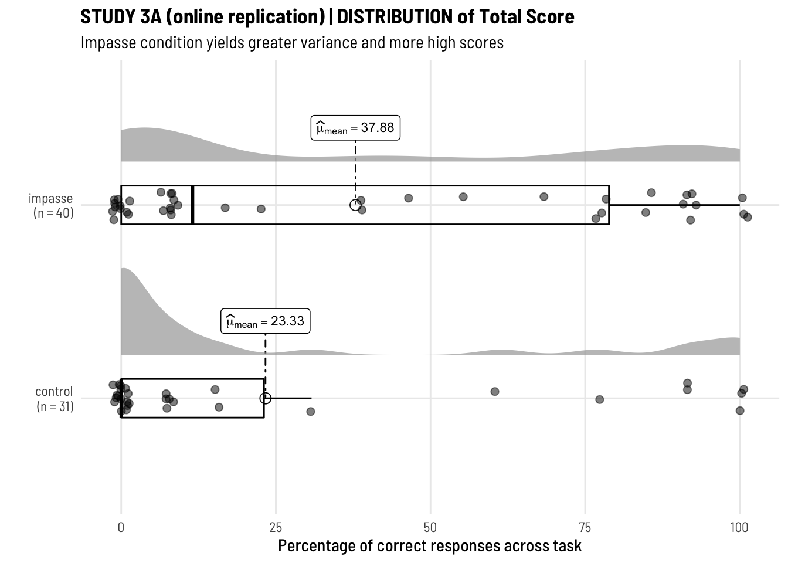
Describe
CODE
title ="Descriptive Statistics of Response Accuracy (Total % Correct)"tbl1 <- mosaic::favstats(~task_percent, data = df_s) tbl1 %>%kbl (caption = title) %>%kable_classic()
Descriptive Statistics of Response Accuracy (Total % Correct)
min
Q1
median
Q3
max
mean
sd
n
missing
0
0
0.077
0.769
1
0.315
0.39
71
0
CODE
title ="Descriptive Statistics of Response Accuracy (Total % Correct) BY CONDITION"tbl2 <- mosaic::favstats(task_percent ~ pretty_condition, data = df_s) tbl2 %>%kbl (caption = title) %>%kable_classic()
Descriptive Statistics of Response Accuracy (Total % Correct) BY CONDITION
pretty_condition
min
Q1
median
Q3
max
mean
sd
n
missing
control
0
0
0.000
0.231
1
0.233
0.372
31
0
impasse
0
0
0.115
0.788
1
0.379
0.397
40
0
WILCOXON RANK SUM (Mann-Whitney Test)
Non parametric alternative to t-test; compares median rather than mean by ranking data
Does not assume normality
Does not assume equal variance of samples (homogeneity of variance)
Test
CODE
(w <-wilcox.test(df_s$task_percent ~ df_s$pretty_condition,paired =FALSE, alternative ="less")) #less, greater
Warning in wilcox.test.default(x = DATA[[1L]], y = DATA[[2L]], ...): cannot
compute exact p-value with ties
Wilcoxon rank sum test with continuity correction
data: df_s$task_percent by df_s$pretty_condition
W = 468, p-value = 0.03
alternative hypothesis: true location shift is less than 0
CODE
report(w)
Effect sizes were labelled following Funder's (2019) recommendations.
The Wilcoxon rank sum test with continuity correction testing the difference in ranks between df_s$task_percent and df_s$pretty_condition suggests that the effect is negative, statistically significant, and medium (W = 467.50, p = 0.034; r (rank biserial) = -0.25, 95% CI [-1.00, -0.02])
Inference – DIRECTIONAL EFFECT
Visualize
CODE
ggbetweenstats( x = pretty_condition, y = task_percent, data = df_s,type ="nonparametric", var.equal =FALSE)
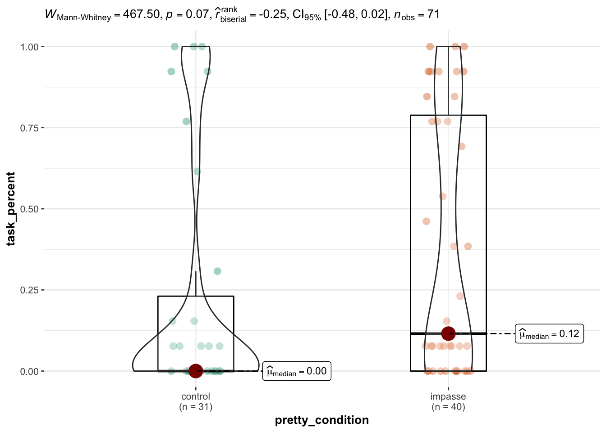
MIXED LOGISTIC REGRESSION
Fit a mixed logistic regression (at the item level), predicting accuracy (absolute score) on all discriminating questions by condition; accounting for random effects of subject and item.
#confirm all factors is.factor(df_i$q) &&is.factor(df_i$subject) &&is.factor(df_i$pretty_condition) &&is.factor(df_i$accuracy)
[1] TRUE
CODE
## 1 | SETUP RANDOM INTERCEPT SUBJECT#:: EMPTY MODEL (baseline, no random effect)print("Empty fixed model")
[1] "Empty fixed model"
CODE
m0 =glm(accuracy ~1, family ="binomial", data = df_i) # summary(m0)#:: RANDOM INTERCEPT SUBJECTprint("Subject intercept random model")
[1] "Subject intercept random model"
CODE
mm.rS <-glmer(accuracy ~ (1|subject), data = df_i, family ="binomial")# summary(mm.rS)# :: TEST random effectpaste("AIC decreases w/ new model?", m0$aic >AIC(logLik(mm.rS)))
[1] "AIC decreases w/ new model? TRUE"
CODE
test_lrt(m0,mm.rS) #same as anova(m0, m1, test = "Chi")
# Likelihood-Ratio-Test (LRT) for Model Comparison (ML-estimator)
Name | Model | df | df_diff | Chi2 | p
-------------------------------------------------
m0 | glm | 1 | | |
mm.rS | glmerMod | 2 | 1 | 542.09 | < .001
CODE
paste("Likelihood Ratio test is significant? p = ",(test_lrt(m0,mm.rS))$p[2])
[1] "Likelihood Ratio test is significant? p = 6.62439101233609e-120"
CODE
#:: RANDOM INTERCEPT SUBJECT + ITEMprint("Subject Intercept + Item intercept random model")
[1] "Subject Intercept + Item intercept random model"
CODE
mm.rSQ <-glmer(accuracy ~ (1|subject) + (1|q), data = df_i, family ="binomial")#summary(mm.rSQ)# :: TEST random effectpaste("AIC decreases w/ new model?", AIC(logLik(mm.rS)) >AIC(logLik(mm.rSQ)))
[1] "AIC decreases w/ new model? TRUE"
CODE
test_lrt(mm.rS, mm.rSQ) #same as anova(m0, m1, test = "Chi")
Some of the nested models seem to be identical and probably only vary in
their random effects.
# Likelihood-Ratio-Test (LRT) for Model Comparison (ML-estimator)
Name | Model | df | df_diff | Chi2 | p
-------------------------------------------------
mm.rS | glmerMod | 2 | | |
mm.rSQ | glmerMod | 3 | 1 | 13.43 | < .001
CODE
paste("Likelihood Ratio test is significant? p = ",(test_lrt(mm.rS, mm.rSQ))$p[2])
Some of the nested models seem to be identical and probably only vary in
their random effects.
[1] "Likelihood Ratio test is significant? p = 0.00024829256662973"
[1] "FIXED Condition + Subject & Item random intercepts"
CODE
mm.CrSQ <-glmer(accuracy ~ pretty_condition + (1|subject) + (1|q) ,data = df_i, family ="binomial")#summary(mm.CrSQ)paste("AIC decreases w/ new model", AIC(logLik(mm.rSQ)) >AIC(logLik(mm.CrSQ)) )
[1] "AIC decreases w/ new model TRUE"
CODE
test_lrt(mm.rSQ,mm.CrSQ) #same as anova(m0, m1, test = "Chi")
# Likelihood-Ratio-Test (LRT) for Model Comparison (ML-estimator)
Name | Model | df | df_diff | Chi2 | p
------------------------------------------------
mm.rSQ | glmerMod | 3 | | |
mm.CrSQ | glmerMod | 4 | 1 | 3.81 | 0.051
CODE
paste("Likelihood Ratio test is significant? p = ",(test_lrt(mm.rSQ,mm.CrSQ))$p[2])
[1] "Likelihood Ratio test is significant? p = 0.0510053431608199"
CODE
# control = glmerControl(optimizer="bobyqa", optCtrl=list(maxfun=2e5)))
A likelihood ratio test indicates adding CONDITION as a fixed effect to a logistic regression model including a fixed effect random intercepts for SUBJECT and QUESTION explains more variance in the data than random-effects only model.
Describe
CODE
#::::::::: SETUPm <- mm.CrSQ#::::::::: PRINT MODEL print("PREDICTOR MODEL")
[1] "PREDICTOR MODEL"
CODE
summary(m)
Generalized linear mixed model fit by maximum likelihood (Laplace
Approximation) [glmerMod]
Family: binomial ( logit )
Formula: accuracy ~ pretty_condition + (1 | subject) + (1 | q)
Data: df_i
AIC BIC logLik deviance df.resid
599 618 -296 591 919
Scaled residuals:
Min 1Q Median 3Q Max
-6.192 -0.230 -0.091 0.195 4.828
Random effects:
Groups Name Variance Std.Dev.
subject (Intercept) 15.137 3.891
q (Intercept) 0.474 0.689
Number of obs: 923, groups: subject, 71; q, 13
Fixed effects:
Estimate Std. Error z value Pr(>|z|)
(Intercept) -3.583 0.951 -3.77 0.00017 ***
pretty_conditionimpasse 2.124 1.114 1.91 0.05657 .
---
Signif. codes: 0 '***' 0.001 '**' 0.01 '*' 0.05 '.' 0.1 ' ' 1
Correlation of Fixed Effects:
(Intr)
prtty_cndtn -0.769
#:::::::: MANUAL ONE-SIDED SIGTEST #note: anova and chi square are always one-tailed, but that is independent of being one-sided#https://www.ibm.com/support/pages/can-one-get-one-tailed-tests-logistic-regression-dividing-significance-levels-half# one-sided (right tail) z test for B COEFFICIENT#SANITY CHECK 2-tailed test should match the model output# tt <- 2*pnorm(summary(m)$coefficients[2,3], lower.tail = F)# paste("p value for two-tailed test, null B = 0 : ",round(tt,5))# ot <- pnorm(summary(m)$coefficients[2,3], lower.tail = F)# paste("BUT we want a one directional, null: B <= 0: ",round(ot,5))#:::::::: INTERPRET COEFFICIENTSpaste("LOG ODDS")
# A tibble: 4 × 9
effect group term estimate std.error statistic p.value conf.low conf.high
<chr> <chr> <chr> <dbl> <dbl> <dbl> <dbl> <dbl> <dbl>
1 fixed <NA> (Int… -3.58 0.951 -3.77 1.65e-4 -5.45 -1.72
2 fixed <NA> pret… 2.12 1.11 1.91 5.66e-2 -0.0594 4.31
3 ran_pars subje… sd__… 3.89 NA NA NA NA NA
4 ran_pars q sd__… 0.689 NA NA NA NA NA
# A tibble: 4 × 9
effect group term estimate std.error statistic p.value conf.low conf.high
<chr> <chr> <chr> <dbl> <dbl> <dbl> <dbl> <dbl> <dbl>
1 fixed <NA> (Int… 0.0278 0.0264 -3.77 1.65e-4 0.00431 0.179
2 fixed <NA> pret… 8.36 9.31 1.91 5.66e-2 0.942 74.2
3 ran_pars subje… sd__… 3.89 NA NA NA NA NA
4 ran_pars q sd__… 0.689 NA NA NA NA NA
CODE
paste("PROBABILITIES")
[1] "PROBABILITIES"
CODE
#probability control = plogis(intercept)#probability impasse = plogis(intercept + coefficient)#FROM predict()# newdata <- df_i %>% dplyr::select(pretty_condition, subject, q)# preds <- predict(m, newdata = newdata, type = "response")# preds <- cbind(newdata, preds)# p <- preds %>% # dplyr::select(pretty_condition, preds) %>% # group_by(pretty_condition) %>% # summarise(# median = median(preds),# se = sd(preds)/sqrt(n()),# lwr = median - 1.96*se,# upr = median + 1.96*se)#FROM merTools#setup df newdata <- df_i %>% dplyr::select(pretty_condition, subject, q)#make predictionspreds <-predictInterval(m, newdata = newdata,which ="fixed", #full, fixed or random for those onlytype ="probability", #linear.predictionstat ="median",n.sims =1000,level =0.80) #width of prediction interval#join predictions to the new dataframepreds <-cbind(newdata, preds)#summarize(summ_preds <- preds %>% dplyr::select(pretty_condition, fit, lwr, upr) %>%group_by(pretty_condition) %>%summarise(median =median(fit),lower =median(lwr),upper =median(upr) ))
# A tibble: 2 × 4
pretty_condition median lower upper
<fct> <dbl> <dbl> <dbl>
1 control 0.0272 0.00486 0.137
2 impasse 0.187 0.0460 0.524
INFERENCE — DIRECTIONAL EFFECT
p = 0.06; but we should be performing a directional test, so actually OK.
## | PLOT PARAMETERS #SJPLOT | MODEL | lOG ODDSplot_model(m, transform =NULL,vline.color ="red", show.intercept =TRUE, show.values =TRUE,p.threshold =0.05, #manually adjust to account for directional testci.lvl =0.95 ) +#manually adjusted for directional test labs(title ="Model ESTIMATE | LOG ODDS",subtitle ="",x ="Condition")
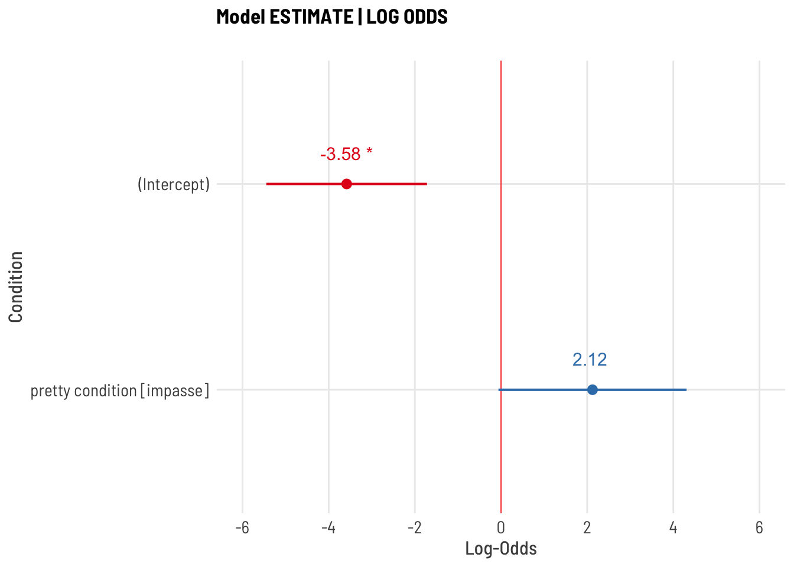
CODE
#SJPLOT | MODEL | ODDS RATIOplot_model(m, transform ="exp",vline.color ="red", show.intercept =TRUE, show.values =TRUE,p.threshold =0.05, #manually adjust to account for directional testci.lvl =0.95 ) +#manually adjusted for directional test labs(title ="Model ESTIMATE | Odds Ratio",subtitle ="",x ="Condition")
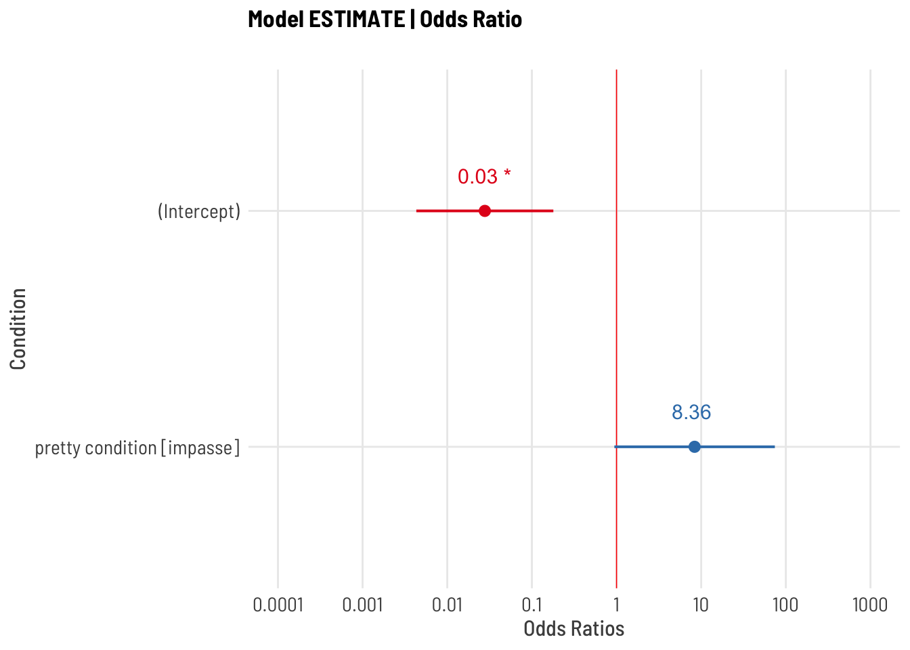
CODE
#EASYSTATS | MODEL | ODDS RATIO# result <- model_parameters(m, exponentiate = TRUE, component = "all")# plot(result) + labs(# title = "Model ESTIMATE | ODDS RATIO"# )## | PLOT TESTS# result <- equivalence_test(m, rule = "classic", ci=0.9) #classic[tost], , bayes# plot(result)## | PLOT PREDICTIONS#SJPLOT | MODEL | PROBABILITIES# plot_model(m, type="eff",# show.intercept = TRUE,# show.values = TRUE,# title = "Model Prediction | Probability of Accurate Response",# axis.title = c("Condition","Probability of Accurate Response"))#SJPLOT | MODEL | PROBABILITIESplot_model(m, type ="pred")[[1]] +ylim(0,1) +labs(title ="Model PREDICTION | Probability of Accurate Response",subtitle ="Impasse increases probability of correct response",y ="Probability of Correct Response", x ="Condition" )
Scale for 'y' is already present. Adding another scale for 'y', which will
replace the existing scale.
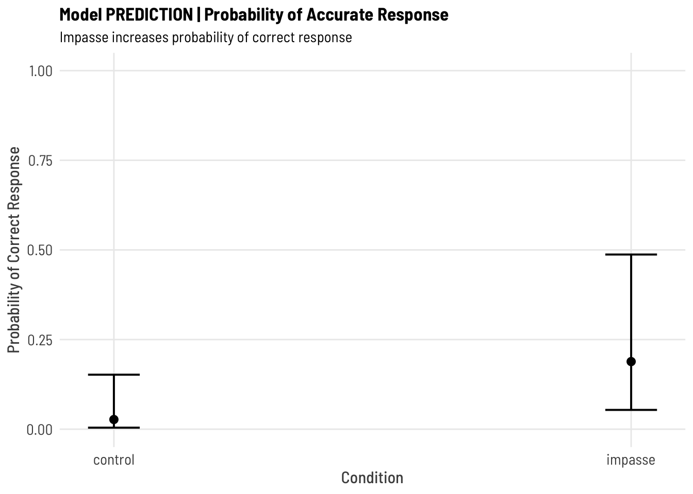
CODE
#GGDIST | MODEL | PREDICTED PROBABILITIESpreds %>%ggplot(aes( x = fit, y = pretty_condition, fill = pretty_condition)) +stat_halfeye(alpha =0.5, normalize ="xy") +xlim(0,0.3) +theme_clean() +labs(title ="Model PREDICTION | Probability of Accurate Response",subtitle ="TODO check preds to see if fixed or includes random" )
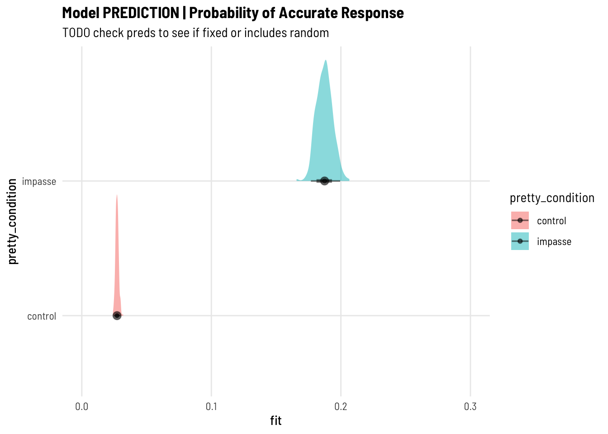
CODE
# SIMULATE FIXED EFFECTS# simulate values of fixed effects # (feEx <- FEsim(m, oddsRatio = FALSE, n.sims = 1000))# PLOT estimates of fixed effects# plotFEsim(feEx) +# theme_bw() + labs(title = "Coefficient Plot of InstEval Model",# x = "Median Effect Estimate")# SIMULATE RANDOM EFFECTS# simulate values of random effects# reEx <- REsim(m)# PLOT estimates of random effects# plotREsim(reEx)
A likelihood ratio test indicates adding CONDITION as a fixed effect to a logistic regression model including a fixed effect random intercepts for SUBJECT and QUESTION explains more variance in the data than random-effects only model.
CODE
# #::::: GGDIST POSTERIOR PROBABILITY OF RESPONSE# ##WORKING# ## VIS probability of correct response# #TAKES A REALLY LONG TIME# # #1 | get draws# draws <- df_i %>%# data_grid(pretty_condition, subject, q) %>%# add_fitted_draws(Bmm.CrSQ,# # n = 100,# # dpar = TRUE,# # transform = TRUE, #gives prob%, otherwise OR# re_formula = NA)# # draws %>% write_rds(file = "analysis/SGC3A/models/draws/draws_BB.catCrSQ.rds")# # #OR load from file# # draws <- read_rds("analysis/SGC3A/models/draws_BB.catCrSQ.rds")# # #2| VISUALIZE PREDICTIONS | GGDIST# ##TODO figure out height normalization.# ##do it with much smaller number of draws # #TODO adjust bandwidth/smoothing? + put on same line + # #TAKES A REAAALY LONG TIME# # draws %>% sample_n(1000) %>% # # ggplot(aes(x = .value, y = 0, fill = pretty_condition)) +# # stat_slab(width = c(.95), alpha = 1, normalize="xy") +# # #normalize = all, panels, xy, groups, none# # xlim(0,1) + labs(# # title = "Model Predicted Probability of Correct Response",# # x = "probability of correct response",# # y = "Interpretation"# # ) + theme_clean() #+ ggeasy::easy_remove_legend() + ggeasy::easy_remove_y_axis()# # #TO PLOT ON THE SAME LINE, INCLUDE Y = 0 in aes and ggeasy::remove_y_axis()
H1A | OVERALL INTERPRETATION STATE
Do Ss in the IMPASSE condition offer less-orthogonal interpretations across the test phase questions?
While absolute accuracy score tells us whether a participant successfully interpreted the coordinate system, it doesn’t allow us to differentiate between different kinds of incorrect interpretations. Here we examine the (categorical) interpretation state type based on the nature of subject’s response, and determine if these interpretations differ by experimental condition. State is a 3-category variable that groups the following interpretations:
“orthogonal” [reference category] includes orthogonal and satisficing responses ==> indicates a primarily orthogonal state of coordinate system understanding
“other” includes: blank, reference point, responses that can’t be classified (including selecting all datapoints), => indicates an uncertain or unidentifiable state of coordinate system understanding, but one that is distinctly not orthogonal nor triangular
“angular” includes ‘lines connecting’ responses as well as responses that include both orthogonal and triangular answers => indicates some degree of angular/triangular coordinate understanding
“triangular” includes correct triangular and ‘lines connecting’ responses as well as responses that include both orthogonal and triangular answers => indicates some degree of angular/triangular coordinate understanding
Research Question
Does Ss in the impasse condition produce less orthogonal responses across questions?
Hypothesis
H1A | Ss in the IMPASSE condition will have a higher likelihood of producing unknown and triangle-like response states across all items
Data
data: df_items where q nin 6,9 (13 discriminant test phase items)
outcome: state ( 3 level factor from high_interpretation )
predictor: condition [between-subjects factor]
Analysis Strategy
MIXED Multinomial (Logistic) Regression on state predicted by condition
Alternative:
MIXED Ordinal regression on state (doesn’t meet proportional odds assumption-I think)
MIXED Multinomial or Ordinal regression on high_interpretation (some cells are 0, produces problems)
A proportional bar chart visualizing the proportion of each interpretations type by condition for each data collection modality (left/right facet) reveals that the pattern of responses are similar regardless of the data collection modality, by differ by condition. In the impasse condition, there are more triangular responses than in control. In the impasse condition, there are also more positive transition (i.e. triangle-like) and neutral (ie. blank or uncertain response types) than in the control condition.
Describe
CODE
#::::::::::::DESCRIPTIVEStable(df_i$state, df_i$pretty_condition) %>%addmargins(2) %>%#display sum for rowprop.table(margin=2) %>%#return proportion (of column)addmargins(1) #sanity check sum of columns
control impasse Sum
orthogonal 0.5682 0.3096 0.4225
other 0.1489 0.2250 0.1918
angular 0.0323 0.0500 0.0423
triangular 0.2506 0.4154 0.3434
Sum 1.0000 1.0000 1.0000
CODE
(t <-table(df_i$state, df_i$pretty_condition) %>%addmargins(2) %>%#display sum for rowaddmargins(1)) #sanity check sum of columns
control impasse Sum
orthogonal 229 161 390
other 60 117 177
angular 13 26 39
triangular 101 216 317
Sum 403 520 923
MIXED MULTINOMIAL REGRESSION
Does condition affect the response state of of items across the task?
Fit a MIXED logistic regression predicting interpretation state (k=3) by condition(k = 2).
Fit Model [mblogit]
CODE
#https://www.elff.eu/software/mclogit/manual/mblogit/#"baseline category logit" model matches multinom()#check reference level print("Categories (first is reference)")
[1] "Categories (first is reference)"
CODE
levels(df_i$state)
[1] "orthogonal" "other" "angular" "triangular"
CODE
#FIT EMPTY MODEL# print("EMPTY MODEL")mm.cat.rSQ <-mblogit(state ~1 , random =list( ~1|subject, ~1|q), data = df_i)
Warning: The `tidy()` method for objects of class mmblogit is not maintained by
the broom team, and is only supported through the lm tidier method. Please be
cautious in interpreting and reporting broom output.
Warning: NaNs produced
Warning: NaNs produced
Warning: The `tidy()` method for objects of class mmblogit is not maintained by
the broom team, and is only supported through the lm tidier method. Please be
cautious in interpreting and reporting broom output.
Warning: NaNs produced
Warning: NaNs produced
Warning: Could not estimate a good default ROPE range. Using 'c(-0.1, 0.1)'.
CODE
plot(result)
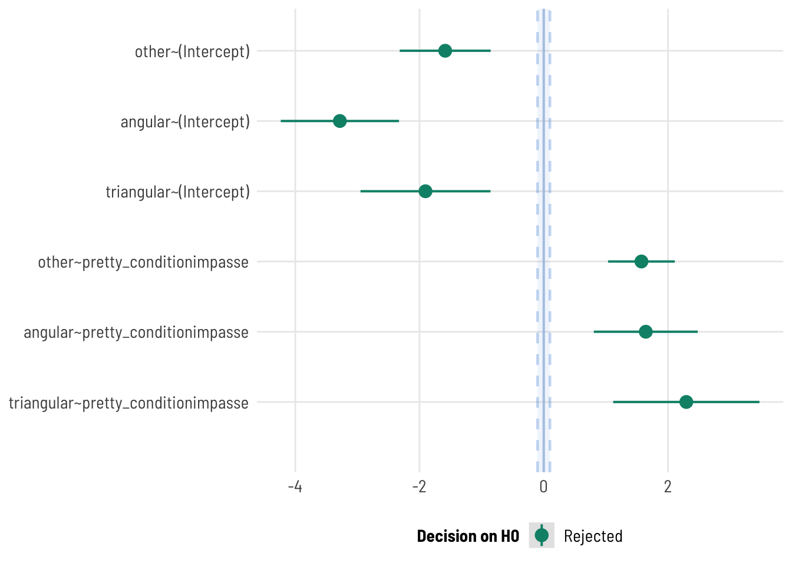
CODE
## | PLOT PREDICTIONS#SJPLOT | MODEL | PROBABILITIES# plot_model(m, type="eff",# show.intercept = TRUE,# show.values = TRUE,# title = "Model Prediction | Probability of Accurate Response",# axis.title = c("Condition","Probability of Accurate Response"))# # #PLOT MODEL PREDICTION# plot_model(m, type = "pred")[[1]] + # ylim(0,1) + labs(# title = "Model Prediction | Probability of Accurate Response",# subtitle = "Impasse increases Probability of Correct Response"# )#TODO EMMEANS for the estimated marginal means
Diagnostics
CODE
# check_model(m)
Fit Model [brms]
CODE
#BAYESIAN RANDOM ONLYBmm.cat.rSQ <-brm( state ~1+ (1|subject) + (1|q), data = df_i, family ="categorical",chains =4, iter =2500, warmup =1000,cores =4, seed =1234,save_pars =save_pars(all =TRUE),# backend = "cmdstanr",file ="analysis/SGC3A/models/sgc3a_brms_state_Bmm.cat.rSQ_REP.rds")
Compiling Stan program...
Start sampling
CODE
#UNINFORMATIVE PRIOR BAYESIAN MIXED VERSION# flat_Bmm.cat.CrSQ <- brm( state ~ pretty_condition + (1|subject) + (1|q), # data = df_i, # family = "categorical",# chains = 4, iter = 2500, warmup = 1000,# cores = 4, seed = 1234,# save_pars = save_pars(all = TRUE),# # backend = "cmdstanr",# file ="analysis/SGC3A/models/sgc3a_brms_state_FLAT_Bmm.cat.CrSQ_REP.rds")# determine default priors # prior_summary(flat_Bmm.cat.CrSQ)#set priors [see justification, below]inf_priors <-c(# too strong?# prior(normal(-6.91, 0.201), class = "Intercept", dpar = "muangular"),# prior(normal(-6.91, 0.201), class = "Intercept", dpar = "muother"),# prior(normal(-6.91, 0.201), class = "Intercept", dpar = "mutriangular"),#prior on INTERCEPTS #25% chance of each answer in control, scale = from 0.01 to 62%prior(normal(-1.1, 1.5), class ="Intercept", dpar ="muangular"),prior(normal(-1.1, 1.5), class ="Intercept", dpar ="muother"),prior(normal(-1.1, 1.5), class ="Intercept", dpar ="mutriangular"),#prior on COEFFICIENT#likely to change odds between 0 and 2.4prior(normal(0, 2.42), class = b, coef="pretty_conditionimpasse", dpar ="muangular"),prior(normal(0, 2.42), class = b, coef="pretty_conditionimpasse", dpar ="muother"),prior(normal(0, 2.42), class = b, coef="pretty_conditionimpasse", dpar ="mutriangular"))#INFORMATIVE PRIORSBmm.cat.CrSQ <-brm( state ~ pretty_condition + (1|subject) + (1|q), data = df_i, family ="categorical",prior = inf_priors,chains =4, iter =2500, warmup =1000,cores =4, seed =1234,save_pars =save_pars(all =TRUE),control =list(adapt_delta =0.98), # to deal with divergent transitions# backend = "cmdstanr",file ="analysis/SGC3A/models/sgc3a_brms_state_Bmm.cat.CrSQ_REP.rds" )
Compiling Stan program...
Start sampling
CODE
#a bayes factor model comparison of the flat vs informative prior models suggest convicing evidence that #informative prior model is a better fit# bayesfactor(Bmm.cat.CrSQ, flat_Bmm.cat.CrSQ)# PRIORS LOGIC # https://www.bayesrulesbook.com/chapter-13.html#building-the-logistic-regression-model#expectation for probability of _better_ response [in control]?#very low probability center: 0.1% [very low]; as logodds = logit(0.001) = -6.91#range from 0 to 55% logit(0.55) = 0.201#probability of 0.1 to 55% is equivalent to [logodds] -6.91 +/ 2* 0.201#therefore... prior for intercept => Normal(−6.91, 0)#expectation for probability of _better_ response [in impasse]?#increases probablity from 0 % # 0 [very low]; as OR = exp(0) = 1#range from 0 to 90% exp(0.9) = 2.46#probability of 0 to 90% is equivalent to [ODDS scale] 1 +/ 2* 2.42#on log odds scale ? [0, ]#therefore... prior for intercept => Normal(1, 2.42)# prior = normal(0.07, 0.035),
Describe
CODE
# best modelm <- Bmm.cat.CrSQ#::::::::: PRINT MODEL print("PREDICTOR MODEL")
[1] "PREDICTOR MODEL"
CODE
summary(m)
Family: categorical
Links: muother = logit; muangular = logit; mutriangular = logit
Formula: state ~ pretty_condition + (1 | subject) + (1 | q)
Data: df_i (Number of observations: 923)
Draws: 4 chains, each with iter = 2500; warmup = 1000; thin = 1;
total post-warmup draws = 6000
Group-Level Effects:
~q (Number of levels: 13)
Estimate Est.Error l-95% CI u-95% CI Rhat Bulk_ESS
sd(muother_Intercept) 1.54 0.40 0.92 2.50 1.00 2162
sd(muangular_Intercept) 1.68 0.61 0.82 3.21 1.00 1992
sd(mutriangular_Intercept) 1.12 0.31 0.66 1.88 1.00 2299
Tail_ESS
sd(muother_Intercept) 3445
sd(muangular_Intercept) 3351
sd(mutriangular_Intercept) 3097
~subject (Number of levels: 71)
Estimate Est.Error l-95% CI u-95% CI Rhat Bulk_ESS
sd(muother_Intercept) 1.00 0.19 0.65 1.41 1.00 2354
sd(muangular_Intercept) 1.47 0.37 0.80 2.26 1.01 2019
sd(mutriangular_Intercept) 4.17 0.58 3.20 5.47 1.00 1646
Tail_ESS
sd(muother_Intercept) 3083
sd(muangular_Intercept) 2903
sd(mutriangular_Intercept) 3070
Population-Level Effects:
Estimate Est.Error l-95% CI u-95% CI Rhat
muother_Intercept -1.96 0.49 -2.93 -1.01 1.00
muangular_Intercept -3.94 0.70 -5.40 -2.64 1.00
mutriangular_Intercept -2.42 0.81 -4.02 -0.89 1.00
muother_pretty_conditionimpasse 1.43 0.36 0.77 2.14 1.00
muangular_pretty_conditionimpasse 1.36 0.60 0.21 2.60 1.00
mutriangular_pretty_conditionimpasse 2.21 0.96 0.33 4.11 1.00
Bulk_ESS Tail_ESS
muother_Intercept 1482 3068
muangular_Intercept 2553 3560
mutriangular_Intercept 1548 2956
muother_pretty_conditionimpasse 3270 3916
muangular_pretty_conditionimpasse 4023 4413
mutriangular_pretty_conditionimpasse 1284 2271
Draws were sampled using sampling(NUTS). For each parameter, Bulk_ESS
and Tail_ESS are effective sample size measures, and Rhat is the potential
scale reduction factor on split chains (at convergence, Rhat = 1).
#think of this like the anova(model) to get p values for each predictor#has to recompile the models with rstan. total drag(b <-bayesfactor(Bmm.cat.rSQ, m))
Warning: Bayes factors might not be precise.
For precise Bayes factors, sampling at least 40,000 posterior samples is recommended.
Computation of Bayes factors: estimating marginal likelihood, please wait...
Bayes Factors for Model Comparison
Model BF
[2] pretty_condition + (1 | subject) + (1 | q) 9.55e+03
* Against Denominator: [1] 1 + (1 | subject) + (1 | q)
* Bayes Factor Type: marginal likelihoods (bridgesampling)
##DRAWS METHOD# GENERATE draws from model# draws <- df_i %>%# data_grid(pretty_condition, subject, q) %>% # add_fitted_draws(Bmm.cat.CrSQ,# # n = 100,# # dpar = TRUE,# # transform = TRUE, #gives prob%, otherwise OR# re_formula = NA)# # draws %>% write_rds(file = "analysis/SGC3A/models/draws/draws_BB.catCrSQ.rds")# # #OR load from file# # draws <- read_rds(file = "analysis/SGC3A/models/draws/draws_BB.catCrSQ.rds")# # # SUMMARIZE draws from model# (k <- kable(draws %>%# dplyr::select(pretty_condition, .category, .value) %>%# group_by(pretty_condition, .category) %>%# median_hdci(.value), digits = 4, col.names =# c("Condition","Category", "Probability","Lower Cred.I","Upper Cred.I", "CI Width", "Point Type", "Interval Type")) %>%# kable_styling())
INFERENCE — EFFECT
[REPORT POSTERIOR MEDIAN \(\exp_{beta}\), 95 % credible interval, % probability of direction]
We fit a (bayesian) multinomial logistic regression model with random intercepts for subjects and questions. A Bayes Factor model comparison (against a random intercepts-only model) indicates extreme evidence for a main effect of CONDITION (BF = 3.65e+04). Consistent with our hypothesis, the impasse condition substantially increases the odds of transitional interpretations.
Across the entire task participants in the impasse condition were 4 times more likely to offer an ‘unknown’ rather than orthogonal response compared with those in the control condition ( \(e^{\beta_1} = 4.16, 95 \% CI [2.16, 8.51], pd = 99\%\)). Participants in the impasse condition were 4 times more likely to offer an ‘angular’ rather than orthogonal response compared with those in the control condition ( \(e^{\beta_1} = 3.84, 95 \% CI [1.23, 13.45], pd = 99\%\)), and 9 times more likely to offer an ‘triangular’ rather than orthogonal response compared with those in the control condition ( \(e^{\beta_1} = 9.07, 95 \% CI [1.39, 60.87], pd = 99\%\)).
CODE
#SJPLOT | MODEL | TABLEtab_model(m)
'bayes_R2' is not defined for unordered categorical models.
## | PLOT PREDICTIONS#SJPLOT | MODEL | PROBABILITIES# plot_model(m, type="eff",# show.intercept = TRUE,# show.values = TRUE,# title = "Model Prediction | Probability of Accurate Response",# axis.title = c("Condition","Probability of Accurate Response"))# # #PLOT MODEL PREDICTIONplot_model(m, type ="pred")
Note: uncertainty of error terms are not taken into account. You may want to use `rstantools::posterior_predict()`.
#::::: GGDIST POSTERIOR PROBABILITY OF RESPONSE##WORKING# https://mjskay.github.io/ggdist/reference/stat_slab.html## VIS probability of correct response#TAKES A REALLY LONG TIME#1 | get draws# draws <- df_i %>%# data_grid(pretty_condition, subject, q) %>% # add_fitted_draws(Bmm.cat.CrSQ,# # n = 100,# # dpar = TRUE,# # transform = TRUE, #gives prob%, otherwise OR# re_formula = NA) # draws %>% write_rds(file = "analysis/SGC3A/models/draws/draws_BB.catCrSQ.rds")#OR load from file# draws <- read_rds(file = "analysis/SGC3A/models/draws/draws_BB.catCrSQ.rds")#2| VISUALIZE PREDICTIONS | GGDIST##TODO figure out height normalization.##do it with much smaller number of draws #TODO adjust bandwidth/smoothing? + put on same line + #TAKES A REAAALY LONG TIME# d <- draws %>%# ggplot(aes(x = .value, y = pretty_condition, fill = .category)) +# stat_slab(width = c(.95), alpha = 1, normalize="xy") +# # #normalize = all, panels, xy, groups, none# xlim(0,1) + labs(# title = "Model Predicted Probability of Correct Response",# x = "probability of correct response",# y = "Interpretation"# ) + theme_clean() #+ ggeasy::easy_remove_legend() + ggeasy::easy_remove_y_axis()# # #TO PLOT ON THE SAME LINE, INCLUDE Y = 0 in aes and ggeasy::remove_y_axis()# # # # ggsave(d, filename = "figures/sgc3a_BBm.cat.CrSQ_lab_posterior.svg", width = 6, height =4)# d##FROM PREDSpreds %>%ggplot(aes(x = preds, y = state, fill = pretty_condition)) +stat_slab(width =c(.95), alpha =0.5, normalize="xy")
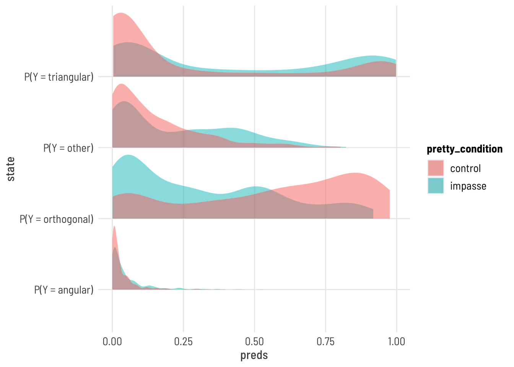
Diagnostics
CODE
#CHECK Fit of posterior predictive to datapp_check(Bmm.cat.CrSQ, ndraws=1000)
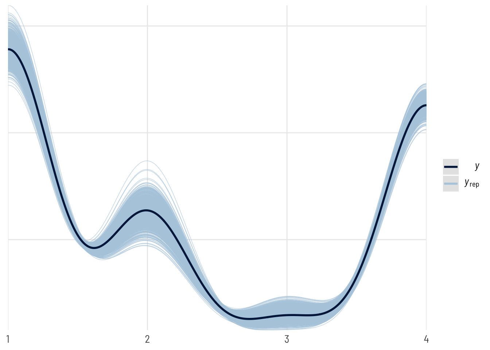
CODE
#CHECK posterior vs. priorsresult <-estimate_density(Bmm.cat.CrSQ)plot(result, stack =FALSE, priors =TRUE)
The predictions of the manual, frequentist mixed multinomial and bayesian mixed multinomial models are comparable.
H1B | Q1 ACCURACY
Do Ss in the IMPASSE condition have a higher likelihood of producing a correct response to the first question?
The graph comprehension task includes 15 questions completed in sequence. But the first question the reader encounters (Q1) is the most important, as it is their first exposure to the unconventional triangular coordinate system.
Research Question
Does the frequency of correct (vs) incorrect responses on the first question differ by condition? [Is response accuracy independent of condition?]
Hypothesis
H1A | Ss in the IMPASSE condition will have a higher likelihood of correctly responding to the first question than those in the CONTROL condition
Data
data: df_items where q == 1
outcome: accuracy ( factor(incorrect/correct) from score_niceABS [absolute score]
predictor: condition [between-subjects factor]
Analysis Strategy
Logistic Regression on accuracy predicted by condition
account for difference in odds of correct score by condition
Alternatives:
Chi-Square test of independence on outcome accuracy by condition
Notes
CHIQ SQR is simplest method to examine independence of two categorical factors; LOGISTIC REGRESSION is recommended for binomial ~ continuous; though with regression we can quantify the size of the effect and overall model fit
independence assumption : (CHI SQR) as we only consider responses on the first question, each observation corresponds to an individual subject, and are thus independent
cell frequency : (CHI SQR) expected frequency in each cell of the contingency table is greater than 5 (more than 5 correct , more than 5 incorrect responses)
A proportional bar chart visualizing the proportion of incorrect (vs) correct responses in each condition for each data collection modality (left/right facet) reveals that the pattern of responses appear the same regardless of the data collection modality. In both data collection sessions, the proportion of incorrect responses is much greater than the proportion of correct responses, regardless of condition (marginal probability of incorrect). In the impasse condition, the difference in proportions is smaller than the control condition (conditional probability of success in impasse; (i.e) There are more correct responses in the impasse condition than the control condition).
CODE
#::::::::::::DESCRIPTIVESpaste("Proportions of Correct Responses by Condition")
[1] "Proportions of Correct Responses by Condition"
CODE
table(df$accuracy, df$pretty_condition) %>%addmargins(2) %>%#display sum for rowprop.table(margin=2) %>%#return proportion (of column)addmargins(1) #sanity check sum of columns
control impasse Sum
incorrect 0.839 0.650 0.732
correct 0.161 0.350 0.268
Sum 1.000 1.000 1.000
CODE
paste("Number of Correct Responses by Condition")
[1] "Number of Correct Responses by Condition"
CODE
table(df$accuracy, df$pretty_condition) %>%addmargins(2) %>%#display sum for rowaddmargins(1) #sanity check sum of columns
control impasse Sum
incorrect 26 26 52
correct 5 14 19
Sum 31 40 71
LOGISTIC REGRESSION
Fit a logistic regression predicting accuracy (absolute score) (n = 71) by condition (k = 2).
Parameter estimate: \(\beta_{0}\) = Log Odds of (correct) responses in CONTROL condition
\(e^{\beta_{0}}\) = ODDS of correct response in CONTROL condition
Parameter estimate: \(\beta_{1}\) = \(\beta_{1impasse}\) Log Odds (Log OR; change in odds for correct response in impasse (vs) control [log scale])
\(e^{\beta_{1}}\) = ODDS RATIO of correct response in IMPASSE (vs) CONTROL
Null hypothesis:\(\beta_{impasse} \le 0\) the odds for a correct response does not change, or decreases
Alternative hypothesis:\(\beta_{impasse} \gt 0\) the odds of a correct response increases
Fit Model
First, we fit a logistic regression with condition as predictor, and compare its fit to an empty (intercept-only) model.
CODE
# MODEL FITTING ::::::::#: 1 EMPTY MODEL baseline glm model intercept onlym0 =glm(accuracy ~1, data = df, family ="binomial")# print("EMPTY MODEL")# summary(m0)#: 2 CONDITION modelm1 <-glm( accuracy ~ pretty_condition, data = df, family ="binomial")# print("PREDICTOR MODEL")summary(m1)
Call:
glm(formula = accuracy ~ pretty_condition, family = "binomial",
data = df)
Deviance Residuals:
Min 1Q Median 3Q Max
-0.928 -0.928 -0.593 1.449 1.910
Coefficients:
Estimate Std. Error z value Pr(>|z|)
(Intercept) -1.649 0.488 -3.38 0.00074 ***
pretty_conditionimpasse 1.030 0.590 1.74 0.08107 .
---
Signif. codes: 0 '***' 0.001 '**' 0.01 '*' 0.05 '.' 0.1 ' ' 1
(Dispersion parameter for binomial family taken to be 1)
Null deviance: 82.483 on 70 degrees of freedom
Residual deviance: 79.188 on 69 degrees of freedom
AIC: 83.19
Number of Fisher Scoring iterations: 4
#: 3 TEST SUPERIOR FITpaste("AIC wth predictor is lower than empty model?", m0$aic > m1$aic)
[1] "AIC wth predictor is lower than empty model? TRUE"
CODE
test_lrt(m0,m1) #same as anova(m0, m1, test = "Chi")
# Likelihood-Ratio-Test (LRT) for Model Comparison (ML-estimator)
Name | Model | df | df_diff | Chi2 | p
------------------------------------------
m0 | glm | 1 | | |
m1 | glm | 2 | 1 | 3.29 | 0.069
CODE
paste("Likelihood Ratio test is significant? p = ",(test_lrt(m0,m1))$p[2])
[1] "Likelihood Ratio test is significant? p = 0.069492127779542"
The Condition predictor decreases AIC, but the Likelihood Ratio Test is marginal. We proceed to examine the predictor model, as we plan to do a 1-tailed NHST .
Describe
CODE
# DESCRIBE MODEL ::::::::::::::::::::::::::::::::::::: print("PREDICTOR MODEL [default two-tailed sig test]")
[1] "PREDICTOR MODEL [default two-tailed sig test]"
CODE
summary(m1)
Call:
glm(formula = accuracy ~ pretty_condition, family = "binomial",
data = df)
Deviance Residuals:
Min 1Q Median 3Q Max
-0.928 -0.928 -0.593 1.449 1.910
Coefficients:
Estimate Std. Error z value Pr(>|z|)
(Intercept) -1.649 0.488 -3.38 0.00074 ***
pretty_conditionimpasse 1.030 0.590 1.74 0.08107 .
---
Signif. codes: 0 '***' 0.001 '**' 0.01 '*' 0.05 '.' 0.1 ' ' 1
(Dispersion parameter for binomial family taken to be 1)
Null deviance: 82.483 on 70 degrees of freedom
Residual deviance: 79.188 on 69 degrees of freedom
AIC: 83.19
Number of Fisher Scoring iterations: 4
# MANUAL ONE-SIDED SIGTEST ::::::::::::::::::::::::::: # one-sided (right tail) z test for B COEFFICIENT#https://stats.stackexchange.com/questions/330655/strategy-for-a-one-sided-test-of-glms-coefficients#SANITY CHECK 2-tailed test should match the model outputtt <-2*pnorm(summary(m1)$coefficients[2,3], lower.tail = F)paste("p value for two-tailed test, null B = 0 : ",round(tt,3))
[1] "p value for two-tailed test, null B = 0 : 0.081"
CODE
ot <-pnorm(summary(m1)$coefficients[2,3], lower.tail = F)paste("BUT we want a one tailed directional, null: B <= 0: ",round(ot,3))
[1] "BUT we want a one tailed directional, null: B <= 0: 0.041"
CODE
paste("adjusted confint for directional hypothesis")
[1] "adjusted confint for directional hypothesis"
CODE
(dcint <-confint(m1, level =0.90)) # get 90% for right side))
# Retrieve predictions as probabilities # (for each level of the predictor)pred.control <-predict(m1,data.frame(pretty_condition="control"),type="response")#this should match : plogis(intercept coefficient)paste("Probability of success in control,", pred.control)
[1] "Probability of success in control, 0.161290322580645"
CODE
pred.impasse <-predict(m1,data.frame(pretty_condition="impasse"),type="response")#this should match : plogis(intercept coefficient + predictor coeff)paste("Probability of success in impasse,", pred.impasse)
[1] "Probability of success in impasse, 0.350000000000014"
Inference — DIRECTIONAL EFFECT
Visualize
CODE
#SET MODELm <- m1#GGSTATS | MODEL | LOG ODDS # ggcoefstats(m1, output = "plot", # conf.level = 0.90) + # labs(x = "Log Odds Estimate", # title = "LOGODDS | Q1 Accuracy ~ condition",# subtitle = "(p is for two tailed test)")#PARAMETERS | MODEL | SIMULATED PARAMETERS# similar to bayesian dist of estimate# result <- simulate_parameters(m1)# #rename params so intercept is plotted # result$Parameter[1] <- "condition [control]"# result$Parameter[2] <- "condition [impasse]"# plot(result) #EQUIVALENCE TEST [not sure if appropriate for log model?]# https://journals.sagepub.com/doi/10.1177/2515245918770963#:~:text=Consequently%2C%20when%20reporting%20an%20equivalence,values%20is%20smaller%20than%20alpha.# https://easystats.github.io/parameters/reference/equivalence_test.lm.html# (result <- equivalence_test(m1, rule = "classic", component = c("all")))# plot(result, show_intercept = TRUE) + # scale_y_discrete(labels = c("impasse", "control")) + # labs( title = "Equivalence Test for Model Parameter Estimates")#PARAMETERS | MODEL | ODDS RATIO # result <- model_parameters(m1,exponentiate = TRUE)# #rename params # result$Parameter[1] <- "condition [control]"# result$Parameter[2] <- "condition [impasse]"# plot(result, show_intercept = TRUE) + labs(# title = "Model Parameter Estimates"# ) + theme_clean() + theme(legend.position="blank")#SJPLOT | MODEL | ODDS RATIO#library(sjPlot)plot_model(m, type ="est",vline.color ="red", show.intercept =TRUE, show.values =TRUE,p.threshold =0.1, #manually adjust to account for directional testci.lvl =0.90 ) +#manually adjusted for directional test scale_y_continuous() +#remove to put on log scale x axis scale_x_discrete(labels=c("control","impasse"))+labs(title ="MODEL ESTIMATE | Q1 Accuracy ~ condition",subtitle ="Impasse increases odds of correct response on Q1",x ="Condition") +theme_clean()
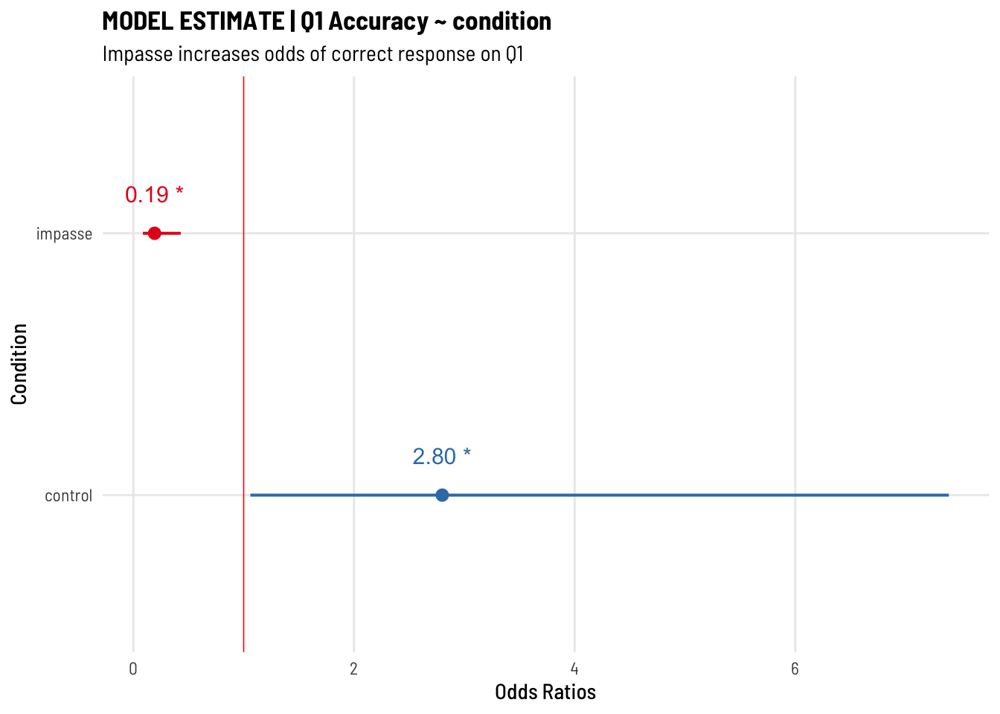
CODE
#SJPLOT | MODEL | PROBABILITIESplot_model(m, type="pred")[[1]] +ylim(0,1) +#scale y axis to actual rangelabs(title ="MODEL PREDICTION | Q1 Accuracy ~ condition",subtitle ="Impasse increases probability of correct response on Q1",x ="Condition") +theme_clean()
Do Ss in the IMPASSE condition offer less-orthogonal interpretations on first question?
While absolute accuracy score tells us whether a participant successfully interpreted the coordinate system, it doesn’t allow us to differentiate between different kinds of incorrect interpretations. Here we examine the (categorical) interpretation state type based on the nature of subject’s response, and determine if these interpretations differ by experimental condition. State is a 3-category derived response variable that groups the following interpretations:
“orthogonal” [reference category] includes orthogonal and satisficing responses ==> indicates a primarily orthogonal state of coordinate system understanding
“other” includes: blank, reference point, responses that can’t be classified (including selecting all datapoints), => indicates an uncertain or unidentifiable state of coordinate system understanding, but one that is distinctly not orthogonal nor triangular
“angular” includes ‘lines connecting’ responses as well as responses that include both orthogonal and triangular answers => indicates some degree of angular/triangular coordinate understanding
“triangular” includes correct triangular and ‘lines connecting’ responses as well as responses that include both orthogonal and triangular answers => indicates some degree of angular/triangular coordinate understanding
Research Question
Does Ss in the impasse condition produce less orthogonal responses on the first question?
Hypothesis
H1A | Ss in the IMPASSE condition will have a higher likelihood of producing unknown and and triangle-like response states, relative to orthogonal response states, on the first question
Data
data: df_items where q == 1
outcome: state ( 4 level factor from 5 level high_interpretation )
predictor: condition [between-subjects factor]
Analysis Strategy
Multinomial (Logistic) Regression on state predicted by condition
Alternative:
Ordinal regression on state; but model doesn’t satisfy proportional odds assumption (parallel slopes)
Multinomial or Ordinal regression on high_interpretation (5 category interpretation state which distinguishes between uncertain (blank, reference) unclassifiable, triangle-like and true triangular.) There are some cells with zeros, however (no uncertain responses in control) which means the model can’t accurately estimate those comparisons
A proportional bar chart visualizing the proportion of each interpretations type by condition for each data collection modality (left/right facet) reveals that the pattern of responses are similar regardless of the data collection modality, by differ by condition. In the impasse condition, there are more triangular responses than in control. We see that around half of the ‘incorrect’ (i.e. not triangular) responses in the impasse condition are not orthogonal-like, but “other/unknown”.
CODE
#::::::::::::DESCRIPTIVEStable(df$state, df$pretty_condition) %>%addmargins(2) %>%#display sum for rowprop.table(margin=2) %>%#return proportion (of column)addmargins(1) #sanity check sum of columns
control impasse Sum
orthogonal 0.8387 0.1750 0.4648
other 0.0000 0.4000 0.2254
angular 0.0000 0.0750 0.0423
triangular 0.1613 0.3500 0.2676
Sum 1.0000 1.0000 1.0000
CODE
(t <-table(df$state, df$pretty_condition) %>%addmargins(2) %>%#display sum for rowaddmargins(1)) #sanity check sum of columns
control impasse Sum
orthogonal 26 7 33
other 0 16 16
angular 0 3 3
triangular 5 14 19
Sum 31 40 71
MULTINOMIAL REGRESSION
Does condition affect the response state of Q1?
Fit a logistic regression predicting interpretation state (k=3) by condition(k = 2).
3 equations will be estimated (# categories - 1); each representing the odds of answering in that particular interpretation (vs) the reference category (orthogonal answer) [essentially a series of binary logistic regressions, but instead of incorrect/correct, comparing [reference category] vs [this category])
For each equation:
\(\beta_{0}\)= Log Odds of [this category type vs. reference category type) response in CONTROL condition
\(e^{\beta_{0}}\)= ODDS of [this category type vs. reference category type] response in CONTROL condition
\(\beta_{1}\)=\(\beta_{1impasse}\)Log Odds (Log OR; change in odds for [this category] type response in impasse (vs) control [log scale])
\(e^{\beta_{1}}\)= ODDS RATIO of [this. vs reference category type] response in IMPASSE (vs) CONTROL
Two-tailed NHST Null hypothesis:\(\beta_{impasse} = 0\)the odds for [this category of response vs. reference] are not different for IMPASSE condition
Alternative hypothesis:\(\beta_{impasse} \ne 0\)the odds of [this category of response vs. reference] increases or decreases for IMPASSE condition
Fit Model
CODE
#check reference level print("Categories (first is reference)")
[1] "Categories (first is reference)"
CODE
levels(df$state)
[1] "orthogonal" "other" "angular" "triangular"
CODE
#FIT EMPTY MODEL# print("EMPTY MODEL")catm.0<-multinom(state ~1, data = df)
# weights: 8 (3 variable)
initial value 98.426900
iter 10 value 83.663951
final value 83.663925
converged
CODE
# summary(catm.0)#FIT PREDICTOR MODEL# print("PREDICTOR MODEL")catm <-multinom(formula = state ~ pretty_condition, data = df, model =TRUE)
# weights: 12 (6 variable)
initial value 98.426900
iter 10 value 63.286429
iter 20 value 63.042636
iter 30 value 63.026275
final value 63.026272
converged
CODE
# summary(catm)#COMPARE MODEL FITpaste("AIC wth predictor is lower than empty model?", catm.0$AIC > catm$AIC)
[1] "AIC wth predictor is lower than empty model? TRUE"
CODE
test_lrt(catm.0, catm)
# Likelihood-Ratio-Test (LRT) for Model Comparison (ML-estimator)
Name | Model | df | df_diff | Chi2 | p
-------------------------------------------------
catm.0 | multinom | 3 | | |
catm | multinom | 6 | 3 | 41.28 | < .001
CODE
##compare bayesian version#library(brms)# b.cat <- brm( state2 ~ pretty_condition, data = df, family = "categorical", backend = "cmdstanr")# summary(b.cat)# plot_model(b.cat)# report(b.cat)# coefficient estimates are very simliar to catm. super cool!##compare mclogit version#"baseline-category logit model# https://www.elff.eu/software/mclogit/manual/mblogit/# blm1 <- mblogit(state2 ~ pretty_condition , data = df)# summary(blm1)#identical to catm. super cool!
AIC in predictor model is less than empty model, and likelihood ratio test indicates predictor model is significantly better fit to the sample data than the empty (intercept only) model.
Call:
multinom(formula = state ~ pretty_condition, data = df, model = TRUE)
Coefficients:
(Intercept) pretty_conditionimpasse
other -12.20 13.02
angular -10.88 10.03
triangular -1.65 2.34
Std. Errors:
(Intercept) pretty_conditionimpasse
other 87.342 87.343
angular 45.215 45.221
triangular 0.488 0.673
Residual Deviance: 126
AIC: 138
CODE
car::Anova(m)
# weights: 8 (3 variable)
initial value 98.426900
iter 10 value 83.663951
final value 83.663925
converged
Analysis of Deviance Table (Type II tests)
Response: state
LR Chisq Df Pr(>Chisq)
pretty_condition 41.3 3 5.7e-09 ***
---
Signif. codes: 0 '***' 0.001 '**' 0.01 '*' 0.05 '.' 0.1 ' ' 1
CODE
# calculate z-statistics of coefficientsz_stats <-summary(m)$coefficients/summary(m)$standard.errors# convert to p-valuesp_values <- (1-pnorm(abs(z_stats)))*2# display p-values in transposed data frame(p_values <-data.frame(p = (p_values)))
sample size is too low to estimate this model. There are no participants in the control condition with ‘other’ or ‘angular’ answers.
Visualize
CODE
#:::::::: PLOT#GGSTATS | MODEL | LOG ODDS # ggcoefstats(m, output = "plot", # # conf.level = 0.90,# exclude.intercept = FALSE) + # labs(x = "Log Odds Estimate", # title = "LOGODDS | Q1 State ~ condition",# subtitle = "(p is for two tailed test)")#:::::::: PLOT#PARAMETERS | MODEL | SIMULATED PARAMETERS# similar to bayesian dist of estimate# result <- simulate_parameters(m)# plot(result, show_intercept = TRUE, stack=FALSE)#PARAMETERS | MODEL | ODDS RATIO # result <- model_parameters(m1,exponentiate = TRUE)# #rename params # result$Parameter[1] <- "condition [control]"# result$Parameter[2] <- "condition [impasse]"# plot(result, show_intercept = TRUE) + labs(# title = "Model Parameter Estimates"# ) + theme_clean() + theme(legend.position="blank")#SJPLOT | MODEL | ODDS RATIO#library(sjPlot)plot_model(m, type ="est",vline.color ="red", show.intercept =TRUE, show.values =TRUE,p.threshold =0.1, #manually adjust to account for directional testci.lvl =0.90 ) +#manually adjusted for directional test # scale_y_continuous() + #remove to put on log scale x axis scale_x_discrete(labels=c("control","impasse"))+labs(title ="MODEL ESTIMATE | Q1 Accuracy ~ condition",subtitle ="Impasse increases odds of correct response on Q1",x ="Condition") +theme_clean()
Scale for 'x' is already present. Adding another scale for 'x', which will
replace the existing scale.
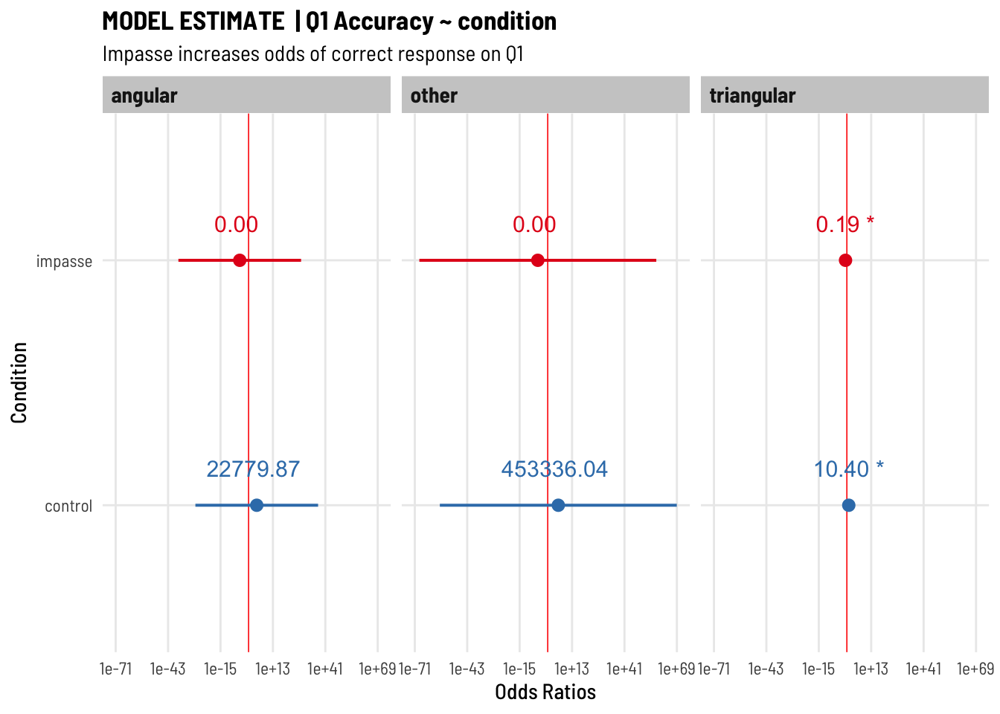
CODE
#SJPLOT | MODEL | PROBABILITIESplot_model(m, type="eff", ci.lvl =0.95)[[1]] +ylim(0,1) +labs(title ="MODEL PREDICTION | Q1 State ~ condition",subtitle ="Impasse increases probability of more accurate response states Q1",x ="Condition") +theme_clean()
Scale for 'y' is already present. Adding another scale for 'y', which will
replace the existing scale.
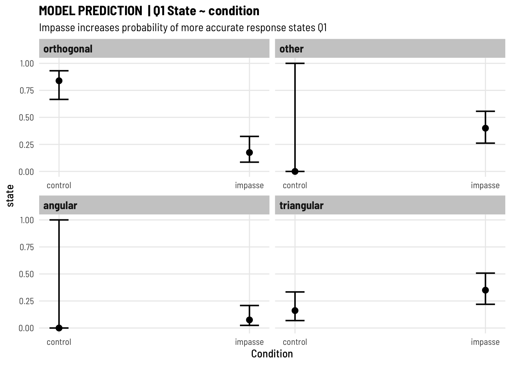
CODE
#MANUALLY BUILD PREDICTION PLOT FACET BY CONDITION RATHER THAN STATEp <-plot_model(m, type="eff")[[1]]d <-ggplot_build(p)[[1]] points <- d[[2]]points <- points %>%mutate(state =recode(PANEL, "1"="orth", "2"="other", "3"="trilike", "4"="tri"),condition =recode(x, "1"="control","2"="impasse"),prob = y)gf_point( prob ~ state, group =~x, data = points) +geom_errorbar(aes( x = state, ymin = ymin, ymax = ymax)) +facet_grid(~condition) +ylim(0,1)
#EXAMINE PREDICTIONS#create sample data frametest <-data.frame(pretty_condition =c("control", "impasse"))pred <-predict(catm, newdata = test, "probs")paste("Predicted Probability of Being in Each State")
[1] "Predicted Probability of Being in Each State"
CODE
( x <-cbind(test, pred))
pretty_condition orthogonal other angular triangular
1 control 0.839 0.00000423 0.0000158 0.161
2 impasse 0.175 0.39999611 0.0750004 0.350
CODE
print("MODEL PERFORMANCE")
[1] "MODEL PERFORMANCE"
CODE
performance(catm)
Can't calculate log-loss.
Can't calculate proper scoring rules for ordinal, multinomial or cumulative link models.
# Indices of model performance
AIC | BIC | R2 | R2 (adj.) | RMSE | Sigma
-----------------------------------------------------
138.053 | 151.629 | 0.247 | 0.235 | 0.354 | 1.393
CODE
DescTools::PseudoR2(catm, which =c("McFadden", "CoxSnell", "Nagelkerke"))
McFadden CoxSnell Nagelkerke
0.247 0.441 0.487
CODE
#General Goodness of Fit#library(generalhoslem)#logitgof(df$state, catm$fitted.values, g = 3)#A non-significant p value indicates that there is no evidence that the observed and expected frequencies differ (i.e., evidence of good fit).#don't fret! this version of the hoslem-lem test is problematic with fewer than 10 input variables# chisq.test(df$state, predict(catm)) #actual states VS predicted states# The chi-square test tests the decrease in unexplained variance from the baseline model to the final model# print("MODEL DIAGNOSTICS")# check_model(m) can't do overall diagnostics, have to do them on individual model equations
Source Code
---subtitle: 'Study SGC3A | (Relication) Hypothesis Testing'# YAML FOR generating modelsummary tables# uncomment to run those cells only # \usepackage{booktabs}# \usepackage{siunitx}# \newcolumntype{d}{S[input-symbols = ()]}---\newpage# SGC3A (Replication) Hypothesis Testing {#sec-SGC3A-replication-hypotesting}*The purpose of this notebook is test the hypotheses that determined the design of the SGC3A study (online replication, without OSPAN).*```{r}#| label: SETUP#| warning : false#| message : false#UTILITIESlibrary(Hmisc) # %nin% operatorlibrary(broom) #tidy model outputlibrary(broom.mixed) #tidy mixed modelslibrary(mosaic) #favstatslibrary(svglite) #saving plots as svglibrary(distributional)#VISUALIZATION# library(ggpubr) #arrange plots# library(cowplot) #arrange shift function plotslibrary(ggformula) #easy graphs# # library(vcd) #mosaic plots# # library(vcdExtra) #mosaic plotslibrary(kableExtra) #printing tableslibrary(sjPlot) #visualize model coefficientslibrary(ggdist) #uncertainty vizlibrary(gghalves) # plots. in halflibrary(ggbeeswarm) # violin plot stuffslibrary(statsExpressions)library(ggstatsplot) #plots with statslibrary(modelsummary) #latex tables for models!#MODELLING# library(rstatix) #helpful testing functions incl wilcoxon, etclibrary(report) #easystats reportinglibrary(see) #easystats visualizationlibrary(performance) #easystats model diagnosticslibrary(parameters) #easystats model summary and vis# library(qqplotr) #confint on qq plot# library(gmodels) #contingency table and CHISQR# library(equatiomatic) #extract model equation# library(pscl) #zeroinfl / hurdle models library(lme4) #mixed effects modelslibrary(lmerTest) #for CIs in glmerlibrary(merTools) #prediction intervalus for glmers # library(ggeffects) #visualization log regr models#MULTINOMIAL library(nnet) #multinomial logistic regression [not mixed] #no p valueslibrary(mclogit) #frequentist mixed multinomial logistic regression [mblogit] #gives p values#BAYESIANlibrary(cmdstanr) #executing stanlibrary(brms) #bayesian mixed multinomials [+ other bayesian reg models]library(bayestestR) library(modelr) #helping with tidybayeslibrary(tidybayes)library(tidyverse) #ALL THE THINGS#OUTPUT OPTIONSlibrary(dplyr, warn.conflicts =FALSE)options(dplyr.summarise.inform =FALSE)options(ggplot2.summarise.inform =FALSE)options(scipen=1, digits=3)#GRAPH THEMEING# theme_set(theme_minimal()) # Custom ggplot theme to make pretty plots# Get the font at https://fonts.google.com/specimen/Barlow+Semi+Condensedtheme_clean <-function() {theme_minimal(base_family ="Barlow Semi Condensed") +theme(panel.grid.minor =element_blank(),plot.title =element_text(family ="BarlowSemiCondensed-Bold"),axis.title =element_text(family ="BarlowSemiCondensed-Medium"),strip.text =element_text(family ="BarlowSemiCondensed-Bold",size =rel(1), hjust =0),strip.background =element_rect(fill ="grey80", color =NA))}set_theme(base =theme_clean())```**Research Questions**In SGC3A we set out to answer the following question: Does posing a mental impasse improve performance on the interval graph comprehension task?**Experimental Hypothesis**\*Learners posed with scenario designed to evoke a mental impasse will be more likely to correct interpret the graph.*- H1A \| Learners in the IMPASSE condition will score higher overall than learners in CONTROL.- H1B \| Learners in the IMPASSE condition will be more likely to correctly answer the first question than learners in CONTROL.**Null Hypothesis**\*No significant differences in performance will exist between learners in the IMPASSE and CONTROL conditions.*```{r}#| label: IMPORT-DATA#| warning : false#| message : false#IMPORT DATA df_subjects <-read_rds('analysis/SGC3A/data/2-scored-data/sgc3a_scored_participants.rds') %>%filter(mode =="asynch") %>%#only get lab-run participantsmutate(task_percent = DV_percent_NABS ) %>%droplevels()#IMPORT OSPAN SUBJECTSdf_ospan <-read_rds('analysis/SGC3A/data/2-scored-data/sgc3a_scored_participants_ospan.rds') #KEEP ONLY SUBJECTS WHO DIDNT COMPLETE OPSAN [ie the replication study]df_subjects <- df_subjects %>%filter( subject %nin% df_ospan$subject)df_items <-read_rds('analysis/SGC3A/data/2-scored-data/sgc3a_scored_items.rds') %>%filter(subject %in% df_subjects$subject) %>%#only get lab-run participantsmutate (q =as.factor(q), subject =as.factor(subject),accuracy =recode_factor(score_niceABS, "0"="incorrect","1"="correct"),# CODES TVERSKY AS TRI-LIKE# state = recode_factor(score_SCALED, #for ordinal# "-1" = "orth-like",# "-0.5" = "unknown",# "0" = "unknown",# "0.5" = "tri-like",# "1" = "tri-like"),# CODES TVERSKY AS OTHERstate =recode_factor(score_SCALED, #for ordinal"-1"="orthogonal","-0.5"="other","0"="other","0.5"="angular","1"="triangular"),state =as.ordered(state)) ```## SAMPLE### Data CollectionData was collected (online, via SONA) in Fall 2021 and Winter 2022, for the purpose of verifying the use of the graph comprehension task for online, asynchronous data collection.```{r}#| label : DESC-DATA-COLLECTIONtitle ="Participants by Condition and Data Collection Period"cols =c("Control Condition","Impasse Condition","Total for Period")cont <-table(df_subjects$term, df_subjects$condition)cont %>%addmargins() %>%kbl(caption = title, col.names = cols) %>%kable_classic()```### Participants```{r}#| label: DESC-PARTICIPANTS#Describe participantssubject.stats <-df_subjects %>% dplyr::select(age) %>%unlist() %>%favstats()subject.stats$percent.male <- ((df_subjects %>%filter(gender=="Male") %>%count())/count(df_subjects))$nsubject.stats$percent.female <- ((df_subjects %>%filter(gender=="Female") %>%count())/count(df_subjects))$nsubject.stats$percent.other <- ((df_subjects %>%filter(gender %nin%c("Female","Male")) %>%count())/count(df_subjects))$ntitle ="Descriptive Statistics of Participant Age and Gender"subject.stats %>%kbl (caption = title) %>%kable_classic()%>%footnote(general ="Age in Years", general_title ="Note: ",footnote_as_chunk = T) ```**Overall** `r subject.stats$n` participants (`r round((subject.stats$percent.male),2) * 100` % male, `r round((subject.stats$percent.female),2) * 100` % female, `r round((subject.stats$percent.other),2) * 100` % other) undergraduate STEM majors at a public American University participated in exchange for course credit (age: `r (subject.stats$min)` - `r (subject.stats$max)` years).## H1A \| OVERALL ACCURACY+-----------------------+------------------------------------------------------------------------------------------------------------------------------------------------------------------------------------------------------------------------------------------------------------------------------------+| Research Question | Do Ss in the IMPASSE condition score higher across the entire task than those in the CONTROL group? |+=======================+====================================================================================================================================================================================================================================================================================+| **Hypothesis** | (H1) Participants in the IMPASSE condition will be more likely to correctly interpret the graph than those in the CONTROL condition. |+-----------------------+------------------------------------------------------------------------------------------------------------------------------------------------------------------------------------------------------------------------------------------------------------------------------------+| **Data** | **data**: `df_items` where `q nin 6,9` (the 13 discriminating Qs ), `df_subjects` || | || | **outcome**: || | || | - \[at item level\] : *accuracy* ( factor(incorrect/correct) from `score_niceABS`\[absolute score\] || | - \[subject level\]: accuracy (number of test phase qs correct from total `s_NABS`) || | || | **predictor**: `condition`\[between-subjects factor\] |+-----------------------+------------------------------------------------------------------------------------------------------------------------------------------------------------------------------------------------------------------------------------------------------------------------------------+| **Analysis Strategy** | 1. Wilcoxon-Rank Sum (Mann-Whitney) test on subject-level total accuracy of test phase (`s_NABS`) || | 2. Mixed Logistic Regression\ || | `accuracy` \~ `condition` + (1 \| `subject` ) + (1 \| `question`)\ || | model effect of condition on probability of correct response \[during test phase\] while accounting for subject (and item-level?) effects |+-----------------------+------------------------------------------------------------------------------------------------------------------------------------------------------------------------------------------------------------------------------------------------------------------------------------+| **Alternatives** | - Ordinal Mixed Logistic Regression on `scaled_score` || | - OLS Linear Regression: bimodal distribution at tails makes the mean a poor predictor; LMs violate assumptions of normally distributed residuals; both absolute and scaled scores yield non-normal residuals; no transformation of the outcome variables yield normal residuals |+-----------------------+------------------------------------------------------------------------------------------------------------------------------------------------------------------------------------------------------------------------------------------------------------------------------------+| **Notes** | **Also exploring:** || | || | - Hurdle model (mixture model w/ binomial + \[poisson or negbinom count; 0s from 1 DGP) || | - Zero Inflated model (mixture model w/ binomial + poisson or negbinom count; 0s from 2 DGPs) || | - Beta regression hurdle model? (mixture with location and scale parameters \[mean, variance\] and hurdles for floor and ceiling effects) || | - Other way to account for the severe bimodality? |+-----------------------+------------------------------------------------------------------------------------------------------------------------------------------------------------------------------------------------------------------------------------------------------------------------------------+#### Setup```{r}#| label: SETUP-ACCdf_i = df_items %>%filter(q %nin%c(6,9)) %>% dplyr::select(pretty_condition, accuracy, subject,q)df_s <- df_subjects %>% dplyr::select(pretty_condition, task_percent)```#### Visualize```{r}#| label: DESC-ACC#:::::::: STACKED PROPORTIONAL BAR CHARTdf_i %>%ggplot(data = .,mapping =aes(x = pretty_condition,fill = accuracy)) +geom_bar(position ="fill" ) +#,color = "black") +# scale_fill_manual(values = paletteer::paletteer_d("ggthemes::calc", 2))+scale_fill_brewer(palette ="Set1") +# facet_wrap(~pretty_mode) + # coord_flip() +theme(legend.position="bottom")+labs(title ="STUDY 3A (online replication) | DISTRIBUTION of Question Accuracy",x ="Condition",y ="Proportion of Questions",fill ="",subtitle="Impasse Condition yields a greater proportion of correct responses")#:::::::: STACKED BAR CHART BY QUESTIONdf_items %>%ggplot(data = .,mapping =aes(x = pretty_condition,fill = accuracy)) +geom_bar(position ="fill" ) +#,color = "black") +scale_fill_brewer(palette ="Set1") +facet_wrap(~q) +labs(title ="STUDY 3 (online replication) | DISTRIBUTION of Accuracy by Question",x ="Condition",fill ="",subtitle="Q6 and Q9 are non-discriminative")#:::::::: FACETED HISTOGRAMstats = df_s %>%group_by(pretty_condition) %>% dplyr::summarise(mean =mean(task_percent))gf_props(~task_percent,fill =~pretty_condition, data = df_s) %>%# gf_facet_grid(pretty_condition ~ pretty_mode) %>%gf_facet_grid(~pretty_condition) %>%gf_vline(data = stats, xintercept =~mean, color ="red") +labs(x ="% Correct",y ="proportion of subjects",title ="DISTRIBUTION | Total Absolute Score (% Correct)",subtitle ="") +theme(legend.position ="blank")#:::::::: RAINCLOUD WITH STATSdf <- df_s %>%mutate(task_percent = task_percent*100)p <-ggbetweenstats(data = df, x = pretty_condition, y = task_percent,plot.type ="box", type ="nonparametric", var.equal =FALSE,centrality.type ="parametric",# package = "RColorBrewer",# palette = "PRGn",centrality.point.args =list(color="black", size =3, shape =1),point.args =list(alpha=0), #suppress pointsggplot.component =## modify further with `{ggplot2}` functionslist(# aes(color = pretty_condition, fill = pretty_condition),# scale_colour_manual(values = paletteer::paletteer_c("viridis::viridis", 3)),# scale_fill_manual(values = paletteer::paletteer_c("viridis::viridis", 3)),theme(axis.text.x =element_text(angle =90))) ) + ggdist::stat_halfeye(alpha =0.7, point_colour =NA,adjust = .5, width = .5, .width =0, justification =-.5) +geom_boxplot(alpha =0.1,width = .2, outlier.shape =NA ) +geom_point(size =2,alpha = .5,position =position_jitter(seed =1, width = .08, height =1.5 ) ) +coord_flip() +theme_clean() +theme(legend.position ="blank")p$layers[[3]]=NULL#remove default boxplote <- statsExpressions::two_sample_test(y = task_percent, x = pretty_condition, data = df,type ="nonparametric", alternative ="less",var.equal =FALSE)#labels are layer 4p +labs(title ="STUDY 3A (online replication) | DISTRIBUTION of Total Score",y ="Percentage of correct responses across task", x ="",# caption=e$expression[[1]],subtitle ="Impasse condition yields greater variance and more high scores")```### Describe```{r}#| label: DESC2-ACCtitle ="Descriptive Statistics of Response Accuracy (Total % Correct)"tbl1 <- mosaic::favstats(~task_percent, data = df_s) tbl1 %>%kbl (caption = title) %>%kable_classic()title ="Descriptive Statistics of Response Accuracy (Total % Correct) BY CONDITION"tbl2 <- mosaic::favstats(task_percent ~ pretty_condition, data = df_s) tbl2 %>%kbl (caption = title) %>%kable_classic()```#### WILCOXON RANK SUM (Mann-Whitney Test)- **Non parametric alternative** to t-test; compares median rather than mean by ranking data- Does not assume normality- Does not assume equal variance of samples (homogeneity of variance)##### Test```{r}#| label: TEST-ACC(w <-wilcox.test(df_s$task_percent ~ df_s$pretty_condition,paired =FALSE, alternative ="less")) #less, greaterreport(w)```##### Inference -- DIRECTIONAL EFFECT##### Visualize```{r}#| label: VIZ-TEST-ACCggbetweenstats( x = pretty_condition, y = task_percent, data = df_s,type ="nonparametric", var.equal =FALSE)```#### MIXED LOGISTIC REGRESSION*Fit a mixed logistic regression (at the item level), predicting accuracy (absolute score) on all discriminating questions by condition; accounting for random effects of subject and item.*##### Fit Model```{r}#| label: MODEL-FIT-ACC## 0 | SETUP#confirm 13 items [all discriminating items]nrow(df_i) /nrow(df_s) ==13#confirm all factors is.factor(df_i$q) &&is.factor(df_i$subject) &&is.factor(df_i$pretty_condition) &&is.factor(df_i$accuracy)## 1 | SETUP RANDOM INTERCEPT SUBJECT#:: EMPTY MODEL (baseline, no random effect)print("Empty fixed model")m0 =glm(accuracy ~1, family ="binomial", data = df_i) # summary(m0)#:: RANDOM INTERCEPT SUBJECTprint("Subject intercept random model")mm.rS <-glmer(accuracy ~ (1|subject), data = df_i, family ="binomial")# summary(mm.rS)# :: TEST random effectpaste("AIC decreases w/ new model?", m0$aic >AIC(logLik(mm.rS)))test_lrt(m0,mm.rS) #same as anova(m0, m1, test = "Chi")paste("Likelihood Ratio test is significant? p = ",(test_lrt(m0,mm.rS))$p[2])#:: RANDOM INTERCEPT SUBJECT + ITEMprint("Subject Intercept + Item intercept random model")mm.rSQ <-glmer(accuracy ~ (1|subject) + (1|q), data = df_i, family ="binomial")#summary(mm.rSQ)# :: TEST random effectpaste("AIC decreases w/ new model?", AIC(logLik(mm.rS)) >AIC(logLik(mm.rSQ)))test_lrt(mm.rS, mm.rSQ) #same as anova(m0, m1, test = "Chi")paste("Likelihood Ratio test is significant? p = ",(test_lrt(mm.rS, mm.rSQ))$p[2])## 2 | ADD FIXED EFFECT CONDITIONprint("FIXED Condition + Subject & Item random intercepts")mm.CrSQ <-glmer(accuracy ~ pretty_condition + (1|subject) + (1|q) ,data = df_i, family ="binomial")#summary(mm.CrSQ)paste("AIC decreases w/ new model", AIC(logLik(mm.rSQ)) >AIC(logLik(mm.CrSQ)) )test_lrt(mm.rSQ,mm.CrSQ) #same as anova(m0, m1, test = "Chi")paste("Likelihood Ratio test is significant? p = ",(test_lrt(mm.rSQ,mm.CrSQ))$p[2])# control = glmerControl(optimizer="bobyqa", optCtrl=list(maxfun=2e5)))```*A likelihood ratio test indicates adding CONDITION as a fixed effect to a logistic regression model including a fixed effect random intercepts for SUBJECT and QUESTION explains more variance in the data than random-effects only model.*##### Describe```{r}#| label: MODEL-DESC-ACC#::::::::: SETUPm <- mm.CrSQ#::::::::: PRINT MODEL print("PREDICTOR MODEL")summary(m)print("SIGNIFICANCE TEST [non directional]")car::Anova(m)paste("MODEL INFO")glance(m)#:::::::: MANUAL ONE-SIDED SIGTEST #note: anova and chi square are always one-tailed, but that is independent of being one-sided#https://www.ibm.com/support/pages/can-one-get-one-tailed-tests-logistic-regression-dividing-significance-levels-half# one-sided (right tail) z test for B COEFFICIENT#SANITY CHECK 2-tailed test should match the model output# tt <- 2*pnorm(summary(m)$coefficients[2,3], lower.tail = F)# paste("p value for two-tailed test, null B = 0 : ",round(tt,5))# ot <- pnorm(summary(m)$coefficients[2,3], lower.tail = F)# paste("BUT we want a one directional, null: B <= 0: ",round(ot,5))#:::::::: INTERPRET COEFFICIENTSpaste("LOG ODDS")# se <- sqrt(diag(stats::vcov(m)))# (tab <- cbind(Est = fixef(m),# LL = fixef(m) - 1.96 * se,# UL = fixef(m) + 1.96 * se))tidy(m, conf.int =TRUE, conf.level =0.95, conf.method ="Wald")paste("ODDS RATIOS")# (e <- exp(tab))tidy(m, conf.int =TRUE, conf.level =0.95, conf.method ="Wald", exponentiate =TRUE)paste("PROBABILITIES")#probability control = plogis(intercept)#probability impasse = plogis(intercept + coefficient)#FROM predict()# newdata <- df_i %>% dplyr::select(pretty_condition, subject, q)# preds <- predict(m, newdata = newdata, type = "response")# preds <- cbind(newdata, preds)# p <- preds %>% # dplyr::select(pretty_condition, preds) %>% # group_by(pretty_condition) %>% # summarise(# median = median(preds),# se = sd(preds)/sqrt(n()),# lwr = median - 1.96*se,# upr = median + 1.96*se)#FROM merTools#setup df newdata <- df_i %>% dplyr::select(pretty_condition, subject, q)#make predictionspreds <-predictInterval(m, newdata = newdata,which ="fixed", #full, fixed or random for those onlytype ="probability", #linear.predictionstat ="median",n.sims =1000,level =0.80) #width of prediction interval#join predictions to the new dataframepreds <-cbind(newdata, preds)#summarize(summ_preds <- preds %>% dplyr::select(pretty_condition, fit, lwr, upr) %>%group_by(pretty_condition) %>%summarise(median =median(fit),lower =median(lwr),upper =median(upr) )) ```##### INFERENCE --- DIRECTIONAL EFFECTp = 0.06; but we should be performing a directional test, so actually OK.```{r}#| label: MODEL-TBL-ACC#SJPLOT | MODEL | TABLEtab_model(m)# #MODEL SUMMARY | save latex table# models <- list("odds ratios" = m, "(log odds)" = m)# notes = list("* p < 0.05, ** p < 0.01, *** p < 0.001",# '$sigma^{2}$ = 3.29" N(subject) = 126 $\tau_{00}$(subject) = 22.22 N(question) = 13 $\tau_{00}$(question) = 0.31'# )# # modelsummary(models,# exponentiate = c(TRUE, FALSE),# shape = term ~ model + statistic,# fmt = 2, #two digits w/ trailing zero# estimate = "{estimate} {stars}",# statistic = "conf.int",# gof_map = c("AIC", "sigma"),# gof_omit = 'RMSE|ICC|BIC',# coef_rename = c("pretty_conditionimpasse" = "Condition[impasse]"),# title = 'Accuracy ~ Condition (Mixed Logistic Regression)',# notes = notes)# # output = "analysis/SGC3A/models/tables/GLMER_OverallAccuracy_lab.tex")# # # coef_omit = "Intercept",```##### Visualize```{r}#| label: MODEL-VIS-ACC## | PLOT PARAMETERS #SJPLOT | MODEL | lOG ODDSplot_model(m, transform =NULL,vline.color ="red", show.intercept =TRUE, show.values =TRUE,p.threshold =0.05, #manually adjust to account for directional testci.lvl =0.95 ) +#manually adjusted for directional test labs(title ="Model ESTIMATE | LOG ODDS",subtitle ="",x ="Condition")#SJPLOT | MODEL | ODDS RATIOplot_model(m, transform ="exp",vline.color ="red", show.intercept =TRUE, show.values =TRUE,p.threshold =0.05, #manually adjust to account for directional testci.lvl =0.95 ) +#manually adjusted for directional test labs(title ="Model ESTIMATE | Odds Ratio",subtitle ="",x ="Condition")#EASYSTATS | MODEL | ODDS RATIO# result <- model_parameters(m, exponentiate = TRUE, component = "all")# plot(result) + labs(# title = "Model ESTIMATE | ODDS RATIO"# )## | PLOT TESTS# result <- equivalence_test(m, rule = "classic", ci=0.9) #classic[tost], , bayes# plot(result)## | PLOT PREDICTIONS#SJPLOT | MODEL | PROBABILITIES# plot_model(m, type="eff",# show.intercept = TRUE,# show.values = TRUE,# title = "Model Prediction | Probability of Accurate Response",# axis.title = c("Condition","Probability of Accurate Response"))#SJPLOT | MODEL | PROBABILITIESplot_model(m, type ="pred")[[1]] +ylim(0,1) +labs(title ="Model PREDICTION | Probability of Accurate Response",subtitle ="Impasse increases probability of correct response",y ="Probability of Correct Response", x ="Condition" )#GGDIST | MODEL | PREDICTED PROBABILITIESpreds %>%ggplot(aes( x = fit, y = pretty_condition, fill = pretty_condition)) +stat_halfeye(alpha =0.5, normalize ="xy") +xlim(0,0.3) +theme_clean() +labs(title ="Model PREDICTION | Probability of Accurate Response",subtitle ="TODO check preds to see if fixed or includes random" )# SIMULATE FIXED EFFECTS# simulate values of fixed effects # (feEx <- FEsim(m, oddsRatio = FALSE, n.sims = 1000))# PLOT estimates of fixed effects# plotFEsim(feEx) +# theme_bw() + labs(title = "Coefficient Plot of InstEval Model",# x = "Median Effect Estimate")# SIMULATE RANDOM EFFECTS# simulate values of random effects# reEx <- REsim(m)# PLOT estimates of random effects# plotREsim(reEx)```##### Diagnostics```{r}#| label: MODEL-DIAG-ACC#| warning: false#| message: false# print("SANITY CHECK REPORTING")# report(m)# print("MODEL PERFORMANCE")# performance(m)print("DIAGNOSTICS")check_model(m)```##### Sanity Check :: Bayesian```{r}#| label: BAYES-MODEL-FIT-ACC# ## 0 | SETUP# #confirm 13 items [all discriminating items]# nrow(df_i) / nrow(df_s) == 13# #confirm all factors # is.factor(df_i$q) && is.factor(df_i$subject) && is.factor(df_i$pretty_condition) && is.factor(df_i$accuracy)# ## # print("FIXED Condition + Subject & Item random intercepts")# Bmm.CrSQ <- brm( accuracy ~ pretty_condition + (1|subject) + (1|q), # data = df_i, # family = "bernoulli",# chains = 4, iter = 2000, warmup = 1000,# cores = 4, seed = 1234,# backend = "cmdstanr",# file ="analysis/SGC3A/models/sgc3a_brms_acc_Bmm.CrSQ_REP.rds")# # #get Priors # # describe_priors(Bmm.CrSQ)# # #GRAPHICAL POSTERIOR PREDICTION CHECKS# pp_check(Bmm.CrSQ)# # #DESCRIBE MODEL# (d <- describe_posterior(ci=.95, Bmm.CrSQ))# # #SEE MODEL# plot(pd(Bmm.CrSQ))# #convert to a pd value# (pds <- pd_to_p(d$pd))```*A likelihood ratio test indicates adding CONDITION as a fixed effect to a logistic regression model including a fixed effect random intercepts for SUBJECT and QUESTION explains more variance in the data than random-effects only model.*```{r}# #::::: GGDIST POSTERIOR PROBABILITY OF RESPONSE# ##WORKING# ## VIS probability of correct response# #TAKES A REALLY LONG TIME# # #1 | get draws# draws <- df_i %>%# data_grid(pretty_condition, subject, q) %>%# add_fitted_draws(Bmm.CrSQ,# # n = 100,# # dpar = TRUE,# # transform = TRUE, #gives prob%, otherwise OR# re_formula = NA)# # draws %>% write_rds(file = "analysis/SGC3A/models/draws/draws_BB.catCrSQ.rds")# # #OR load from file# # draws <- read_rds("analysis/SGC3A/models/draws_BB.catCrSQ.rds")# # #2| VISUALIZE PREDICTIONS | GGDIST# ##TODO figure out height normalization.# ##do it with much smaller number of draws # #TODO adjust bandwidth/smoothing? + put on same line + # #TAKES A REAAALY LONG TIME# # draws %>% sample_n(1000) %>% # # ggplot(aes(x = .value, y = 0, fill = pretty_condition)) +# # stat_slab(width = c(.95), alpha = 1, normalize="xy") +# # #normalize = all, panels, xy, groups, none# # xlim(0,1) + labs(# # title = "Model Predicted Probability of Correct Response",# # x = "probability of correct response",# # y = "Interpretation"# # ) + theme_clean() #+ ggeasy::easy_remove_legend() + ggeasy::easy_remove_y_axis()# # #TO PLOT ON THE SAME LINE, INCLUDE Y = 0 in aes and ggeasy::remove_y_axis()```## H1A \| OVERALL INTERPRETATION STATE**Do Ss in the IMPASSE condition offer less-orthogonal interpretations across the test phase questions?**While absolute accuracy score tells us whether a participant successfully interpreted the coordinate system, it doesn't allow us to differentiate between different kinds of incorrect interpretations. Here we examine the (categorical) interpretation state type based on the nature of subject's response, and determine if these interpretations differ by experimental condition. State is a 3-category variable that groups the following interpretations:- **"orthogonal"** \[reference category\] includes orthogonal and satisficing responses ==\> indicates a primarily *orthogonal* state of coordinate system understanding- **"other"** includes: blank, reference point, responses that can't be classified (including selecting all datapoints), =\> indicates an uncertain or unidentifiable state of coordinate system understanding, but one that is distinctly *not* orthogonal nor triangular- **"angular"** includes 'lines connecting' responses as well as responses that include both orthogonal *and* triangular answers =\> indicates some degree of angular/triangular coordinate understanding- **"triangular"** includes correct triangular and 'lines connecting' responses as well as responses that include both orthogonal *and* triangular answers =\> indicates some degree of angular/triangular coordinate understanding+-----------------------+------------------------------------------------------------------------------------------------------------------------------------------+| Research Question | Does Ss in the impasse condition produce less orthogonal responses across questions? |+=======================+==========================================================================================================================================+| **Hypothesis** | H1A \| Ss in the IMPASSE condition will have a higher likelihood of producing unknown and triangle-like response states across all items |+-----------------------+------------------------------------------------------------------------------------------------------------------------------------------+| **Data** | - data: `df_items` where `q nin 6,9` (13 discriminant test phase items) || | - outcome: `state` ( 3 level factor from high_interpretation ) || | - predictor: `condition`\[between-subjects factor\] |+-----------------------+------------------------------------------------------------------------------------------------------------------------------------------+| **Analysis Strategy** | 1. MIXED Multinomial (Logistic) Regression on state predicted by condition || | || | Alternative: || | || | - MIXED Ordinal regression on state (doesn't meet proportional odds assumption-I think) || | - MIXED Multinomial or Ordinal regression on high_interpretation (some cells are 0, produces problems) |+-----------------------+------------------------------------------------------------------------------------------------------------------------------------------+#### Setup```{r}#| label: SETUP-STATEdf_i = df_items %>%filter(q %nin%c(6,9)) %>% dplyr::select(q,subject,state,pretty_condition)```#### Visualize```{r}#:::::::: STACKED BAR CHARTdf_i %>%ggplot(data = .,mapping =aes(x = pretty_condition,fill = state)) +geom_bar(position ="fill" ) +#,color = "black") +scale_fill_manual(values = paletteer::paletteer_d("ggthemes::calc", 4))+# facet_wrap(~pretty_mode) + theme(legend.position ="bottom")+labs(title ="Study 3A (online replication) | DISTRIBUTION of Interpretation",x ="Condition",y ="Proportion of Questions",fill ="",subtitle="")#:::::::: STACKED BAR CHARTdf_i %>%ggplot(data = .,mapping =aes(x = pretty_condition,fill = state)) +geom_bar(position ="fill" ) +#,color = "black") +scale_fill_manual(values = paletteer::paletteer_d("ggthemes::calc", 4))+facet_wrap(~q) +labs(title ="Interpretation by Question",x ="Condition",fill ="",subtitle="")```A proportional bar chart visualizing the proportion of each interpretations type by condition for each data collection modality (left/right facet) reveals that the pattern of responses are similar regardless of the data collection modality, by differ by condition. In the impasse condition, there are more triangular responses than in control. In the impasse condition, there are also more positive transition (i.e. triangle-like) and neutral (ie. blank or uncertain response types) than in the control condition.#### Describe```{r}#::::::::::::DESCRIPTIVEStable(df_i$state, df_i$pretty_condition) %>%addmargins(2) %>%#display sum for rowprop.table(margin=2) %>%#return proportion (of column)addmargins(1) #sanity check sum of columns(t <-table(df_i$state, df_i$pretty_condition) %>%addmargins(2) %>%#display sum for rowaddmargins(1)) #sanity check sum of columns```#### MIXED MULTINOMIAL REGRESSION*Does condition affect the response state of of items across the task?**Fit a MIXED logistic regression predicting interpretation state (k=3) by condition(k = 2).*##### Fit Model \[mblogit\]```{r}#| label: FIT-MBLOGIT-STATE#https://www.elff.eu/software/mclogit/manual/mblogit/#"baseline category logit" model matches multinom()#check reference level print("Categories (first is reference)")levels(df_i$state)#FIT EMPTY MODEL# print("EMPTY MODEL")mm.cat.rSQ <-mblogit(state ~1 , random =list( ~1|subject, ~1|q), data = df_i)#summary(mm.cat.rSQ)#FIT PREDICTOR MODEL# print("PREDICTOR MODEL")mm.cat.CrSQ <-mblogit(state ~ pretty_condition , random =list( ~1|subject, ~1|q), data = df_i)# summary(mm.cat.CrSQ)#COMPARE MODEL FITpaste("AIC wth predictor is lower than empty model?", AIC(mm.cat.rSQ) >AIC(mm.cat.CrSQ))test_lrt(mm.cat.rSQ, mm.cat.CrSQ)```##### Describe```{r}#| label: DESC-MBLOGIT-STATEm <- mm.cat.CrSQ#DESCRIBE MODELsummary(m)#INTERPRET COEFFICIENTSpaste("LOG ODDS")tidy(m, conf.int =TRUE, conf.level =0.95, conf.method ="Wald")paste("ODDS RATIOS")tidy(m, conf.int =TRUE, conf.level =0.95, conf.method ="Wald", exponentiate =TRUE)# paste("MODEL INFO")# glance(m)#PERFORMANCEperformance(m)```##### TODO Inference```{r}#| label: MODEL-TBL-MBLOGIT-STATE#SJPLOT | MODEL | TABLEtab_model(m)# #MODEL SUMMARY | save latex table# models <- list("odds ratios" = m, "(log odds)" = m)# notes = list("* p < 0.05, ** p < 0.01, *** p < 0.001",# '$sigma^{2}$ = 3.29" N(subject) = 126 $\tau_{00}$(subject) = 22.22 N(question) = 13 $\tau_{00}$(question) = 0.31'# )# # modelsummary(models,# exponentiate = c(TRUE, FALSE),# shape = term ~ model + statistic,# fmt = 2, #two digits w/ trailing zero# estimate = "{estimate} {stars}",# statistic = "conf.int",# gof_map = c("AIC", "sigma"),# gof_omit = 'RMSE|ICC|BIC',# coef_rename = c("pretty_conditionimpasse" = "Condition[impasse]"),# title = 'Accuracy ~ Condition (Mixed Logistic Regression)',# notes = notes)# # output = "analysis/SGC3A/models/tables/GLMER_OverallAccuracy_lab.tex")# # # coef_omit = "Intercept",```##### Visualize```{r}#| label: VIS-MBLOGIT-STATE## | PLOT PARAMETERS #SJPLOT | MODEL | ODDS RATIOplot_model(m, transform ="exp",vline.color ="red", show.intercept =TRUE, show.values =TRUE)#TODO SEPARATE THIS BY EQUATION # ms <- model_parameters(Bmm.cat.CrSQ, component = "conditional")# m1 <- ms %>% filter(str_detect(Parameter, "muother"))# plot(m1)#EASYSTATS | MODEL | ODDS RATIOresult <-model_parameters(m, exponentiate =TRUE, component ="all")plot(result, show_labels =TRUE, n_columns =3)# result <- simulate_parameters(m)# plot(result, stack = FALSE)## | PLOT TESTSresult <-equivalence_test(m, rule ="classic", ci=0.9) #classic[tost], , bayesplot(result)## | PLOT PREDICTIONS#SJPLOT | MODEL | PROBABILITIES# plot_model(m, type="eff",# show.intercept = TRUE,# show.values = TRUE,# title = "Model Prediction | Probability of Accurate Response",# axis.title = c("Condition","Probability of Accurate Response"))# # #PLOT MODEL PREDICTION# plot_model(m, type = "pred")[[1]] + # ylim(0,1) + labs(# title = "Model Prediction | Probability of Accurate Response",# subtitle = "Impasse increases Probability of Correct Response"# )#TODO EMMEANS for the estimated marginal means```##### Diagnostics```{r}# check_model(m)```##### Fit Model \[brms\]```{r}#| label: FIT-BRMS-STATE#BAYESIAN RANDOM ONLYBmm.cat.rSQ <-brm( state ~1+ (1|subject) + (1|q), data = df_i, family ="categorical",chains =4, iter =2500, warmup =1000,cores =4, seed =1234,save_pars =save_pars(all =TRUE),# backend = "cmdstanr",file ="analysis/SGC3A/models/sgc3a_brms_state_Bmm.cat.rSQ_REP.rds")#UNINFORMATIVE PRIOR BAYESIAN MIXED VERSION# flat_Bmm.cat.CrSQ <- brm( state ~ pretty_condition + (1|subject) + (1|q), # data = df_i, # family = "categorical",# chains = 4, iter = 2500, warmup = 1000,# cores = 4, seed = 1234,# save_pars = save_pars(all = TRUE),# # backend = "cmdstanr",# file ="analysis/SGC3A/models/sgc3a_brms_state_FLAT_Bmm.cat.CrSQ_REP.rds")# determine default priors # prior_summary(flat_Bmm.cat.CrSQ)#set priors [see justification, below]inf_priors <-c(# too strong?# prior(normal(-6.91, 0.201), class = "Intercept", dpar = "muangular"),# prior(normal(-6.91, 0.201), class = "Intercept", dpar = "muother"),# prior(normal(-6.91, 0.201), class = "Intercept", dpar = "mutriangular"),#prior on INTERCEPTS #25% chance of each answer in control, scale = from 0.01 to 62%prior(normal(-1.1, 1.5), class ="Intercept", dpar ="muangular"),prior(normal(-1.1, 1.5), class ="Intercept", dpar ="muother"),prior(normal(-1.1, 1.5), class ="Intercept", dpar ="mutriangular"),#prior on COEFFICIENT#likely to change odds between 0 and 2.4prior(normal(0, 2.42), class = b, coef="pretty_conditionimpasse", dpar ="muangular"),prior(normal(0, 2.42), class = b, coef="pretty_conditionimpasse", dpar ="muother"),prior(normal(0, 2.42), class = b, coef="pretty_conditionimpasse", dpar ="mutriangular"))#INFORMATIVE PRIORSBmm.cat.CrSQ <-brm( state ~ pretty_condition + (1|subject) + (1|q), data = df_i, family ="categorical",prior = inf_priors,chains =4, iter =2500, warmup =1000,cores =4, seed =1234,save_pars =save_pars(all =TRUE),control =list(adapt_delta =0.98), # to deal with divergent transitions# backend = "cmdstanr",file ="analysis/SGC3A/models/sgc3a_brms_state_Bmm.cat.CrSQ_REP.rds" )#a bayes factor model comparison of the flat vs informative prior models suggest convicing evidence that #informative prior model is a better fit# bayesfactor(Bmm.cat.CrSQ, flat_Bmm.cat.CrSQ)# PRIORS LOGIC # https://www.bayesrulesbook.com/chapter-13.html#building-the-logistic-regression-model#expectation for probability of _better_ response [in control]?#very low probability center: 0.1% [very low]; as logodds = logit(0.001) = -6.91#range from 0 to 55% logit(0.55) = 0.201#probability of 0.1 to 55% is equivalent to [logodds] -6.91 +/ 2* 0.201#therefore... prior for intercept => Normal(−6.91, 0)#expectation for probability of _better_ response [in impasse]?#increases probablity from 0 % # 0 [very low]; as OR = exp(0) = 1#range from 0 to 90% exp(0.9) = 2.46#probability of 0 to 90% is equivalent to [ODDS scale] 1 +/ 2* 2.42#on log odds scale ? [0, ]#therefore... prior for intercept => Normal(1, 2.42)# prior = normal(0.07, 0.035),```##### Describe```{r}#| label: DESC-BRMS-STATE# best modelm <- Bmm.cat.CrSQ#::::::::: PRINT MODEL print("PREDICTOR MODEL")summary(m)(d <-describe_posterior(ci=.95, Bmm.cat.CrSQ))print("BAYES FACTOR [comparison to null]")#think of this like the anova(model) to get p values for each predictor#has to recompile the models with rstan. total drag(b <-bayesfactor(Bmm.cat.rSQ, m))print("DESCRIBE POSTERIOR")#:::::::: INTERPRET COEFFICIENTSpaste("LOG ODDS")(l <-describe_posterior(m))# (tm <- tidy(m, conf.int = TRUE))paste("ODDS RATIOS")(e <-model_parameters(m, exponentiate =TRUE))# tidy(m, conf.int = TRUE, exponentiate = TRUE)# tm %>% mutate(# OR.est = exp(estimate),# exp.low = exp(conf.low),# exp.high = exp(conf.high)# ) %>% dplyr::select(effect, component, group, term, OR.est, exp.low, exp.high)# paste("PROBABILITIES")# # #PREDICT METHODnewdata <- df_i %>% dplyr::select(pretty_condition, subject, q)preds <-predict(m, newdata = newdata, type ="response")preds <-cbind(newdata, preds)# #lengthen data frame to handle multinomialpreds <- preds %>% dplyr::select(-subject, -q) %>%#marginalize over subject and qpivot_longer(cols =!pretty_condition,values_to ="preds",names_to ="state",)# (p <- preds %>%group_by(pretty_condition, state ) %>%summarise(median =median(preds),se =sd(preds)/sqrt(n()),lwr = median -1.96*se,upr = median +1.96*se))##DRAWS METHOD# GENERATE draws from model# draws <- df_i %>%# data_grid(pretty_condition, subject, q) %>% # add_fitted_draws(Bmm.cat.CrSQ,# # n = 100,# # dpar = TRUE,# # transform = TRUE, #gives prob%, otherwise OR# re_formula = NA)# # draws %>% write_rds(file = "analysis/SGC3A/models/draws/draws_BB.catCrSQ.rds")# # #OR load from file# # draws <- read_rds(file = "analysis/SGC3A/models/draws/draws_BB.catCrSQ.rds")# # # SUMMARIZE draws from model# (k <- kable(draws %>%# dplyr::select(pretty_condition, .category, .value) %>%# group_by(pretty_condition, .category) %>%# median_hdci(.value), digits = 4, col.names =# c("Condition","Category", "Probability","Lower Cred.I","Upper Cred.I", "CI Width", "Point Type", "Interval Type")) %>%# kable_styling())```##### INFERENCE --- EFFECT\[REPORT POSTERIOR MEDIAN $\exp_{beta}$, 95 % credible interval, % probability of direction\]We fit a (bayesian) multinomial logistic regression model with random intercepts for subjects and questions. A Bayes Factor model comparison (against a random intercepts-only model) indicates extreme evidence for a main effect of CONDITION (BF = 3.65e+04). **Consistent with our hypothesis, the impasse condition substantially increases the odds of transitional interpretations.**Across the entire task participants in the impasse condition were 4 times more likely to offer an 'unknown' rather than orthogonal response compared with those in the control condition ( $e^{\beta_1} = 4.16, 95 \% CI [2.16, 8.51], pd = 99\%$). Participants in the impasse condition were 4 times more likely to offer an 'angular' rather than orthogonal response compared with those in the control condition ( $e^{\beta_1} = 3.84, 95 \% CI [1.23, 13.45], pd = 99\%$), and 9 times more likely to offer an 'triangular' rather than orthogonal response compared with those in the control condition ( $e^{\beta_1} = 9.07, 95 \% CI [1.39, 60.87], pd = 99\%$).```{r}#| label: TBL-BRMS-STATE#SJPLOT | MODEL | TABLEtab_model(m)# #MODEL SUMMARY | save latex table# models <- list("odds ratios" = m, "(log odds)" = m)# notes = list("* p < 0.05, ** p < 0.01, *** p < 0.001",# '$sigma^{2}$ = 3.29" N(subject) = 126 $\tau_{00}$(subject) = 22.22 N(question) = 13 $\tau_{00}$(question) = 0.31'# )# # modelsummary(models,# exponentiate = c(TRUE, FALSE),# shape = term ~ model + statistic,# fmt = 2, #two digits w/ trailing zero# estimate = "{estimate} {stars}",# statistic = "conf.int",# gof_map = c("AIC", "sigma"),# gof_omit = 'RMSE|ICC|BIC',# coef_rename = c("pretty_conditionimpasse" = "Condition[impasse]"),# title = 'Accuracy ~ Condition (Mixed Logistic Regression)',# notes = notes)# # output = "analysis/SGC3A/models/tables/GLMER_OverallAccuracy_lab.tex")# # # coef_omit = "Intercept",# # # ## POINT ESTIMATES IN PROBABILITY# #1 | get draws# draws <- df_i %>%# data_grid(pretty_condition, subject, q) %>%# add_fitted_draws(Bmm.cat.CrSQ,# # n = 100,# # dpar = TRUE,# # transform = TRUE, #gives prob%, otherwise OR# re_formula = NA)# draws %>% write_rds(file = "analysis/SGC3A/models/draws/draws_BB.catCrSQ.rds")# # #2 | SUMMARIZE draws # k <- kable(draws %>%# select(pretty_condition, .category, .value) %>%# group_by(pretty_condition, .category) %>%# median_hdci(.value), digits = 2, col.names = # c("Condition","Category", "Probability","Lower Cred.I","Upper Cred.I", "CI Width", "Point Type", "Interval Type")) %>% # kable_styling()# k#COMPARISONS# c <- draws %>% # # dplyr::select(pretty_condition, .category, .value) %>%# compare_levels(variable = .value, by = pretty_condition, # comparison = list(c("control","impasse"))) # # c("adots","interval"),# # c("adots","mean"),# # c("adots","text"),# # c("density","interval"),# # c("density","mean"),# # c("density","text"),# # c("interval","mean"),# # c("interval","text"),# # c("mean","text")# # c %>%# ggplot(aes(x = .value, y = reorder(x =pretty_condition, X = .value)))+# stat_interval(.width = .95, color = "black") +# geom_vline(xintercept = 0)+# theme_bw()+# # coord_cartesian(xlim = c(-.5,1)) +# theme_tidybayes() # comps```##### Visualize```{r}#| label: VIS-BRMS-STATE## | PLOT PARAMETERS #SJPLOT | MODEL | ODDS RATIO# plot_model(m, vline.color = "red",# show.intercept = TRUE,# show.values = TRUE,# p.threshold = 0.1, #manually adjust to account for directional test# ci.lvl = 0.90 ) + #manually adjusted for directional test# labs(title = "Model Estimate | Odds Ratio",# subtitle = "",# x = "Condition")#EASYSTATS | MODEL | ODDS RATIOresult <-model_parameters(Bmm.cat.CrSQ, exponentiate =TRUE, component ="all")plot(result, show_intercept =TRUE, show_labels =TRUE) # + theme_clean()# # result <- estimate_density(m,exponentiate = TRUE)# plot(result, stack = FALSE, priors = TRUE)## | PLOT TESTSresult <-equivalence_test(m, rule ="classic", ci=0.9) #classic[tost], , bayesplot(result)result <-rope(m)plot(result)(result <-pd(m,exponentiate =TRUE))plot(result, show_intercept =TRUE, show_labels =TRUE)## | PLOT PREDICTIONS#SJPLOT | MODEL | PROBABILITIES# plot_model(m, type="eff",# show.intercept = TRUE,# show.values = TRUE,# title = "Model Prediction | Probability of Accurate Response",# axis.title = c("Condition","Probability of Accurate Response"))# # #PLOT MODEL PREDICTIONplot_model(m, type ="pred")#TODO OUTPUT TABLE #https://arelbundock.com/posts/modelsummary_multinomial_logit/# modelsummary(m)``````{r}#::::: GGDIST POSTERIOR PROBABILITY OF RESPONSE##WORKING# https://mjskay.github.io/ggdist/reference/stat_slab.html## VIS probability of correct response#TAKES A REALLY LONG TIME#1 | get draws# draws <- df_i %>%# data_grid(pretty_condition, subject, q) %>% # add_fitted_draws(Bmm.cat.CrSQ,# # n = 100,# # dpar = TRUE,# # transform = TRUE, #gives prob%, otherwise OR# re_formula = NA) # draws %>% write_rds(file = "analysis/SGC3A/models/draws/draws_BB.catCrSQ.rds")#OR load from file# draws <- read_rds(file = "analysis/SGC3A/models/draws/draws_BB.catCrSQ.rds")#2| VISUALIZE PREDICTIONS | GGDIST##TODO figure out height normalization.##do it with much smaller number of draws #TODO adjust bandwidth/smoothing? + put on same line + #TAKES A REAAALY LONG TIME# d <- draws %>%# ggplot(aes(x = .value, y = pretty_condition, fill = .category)) +# stat_slab(width = c(.95), alpha = 1, normalize="xy") +# # #normalize = all, panels, xy, groups, none# xlim(0,1) + labs(# title = "Model Predicted Probability of Correct Response",# x = "probability of correct response",# y = "Interpretation"# ) + theme_clean() #+ ggeasy::easy_remove_legend() + ggeasy::easy_remove_y_axis()# # #TO PLOT ON THE SAME LINE, INCLUDE Y = 0 in aes and ggeasy::remove_y_axis()# # # # ggsave(d, filename = "figures/sgc3a_BBm.cat.CrSQ_lab_posterior.svg", width = 6, height =4)# d##FROM PREDSpreds %>%ggplot(aes(x = preds, y = state, fill = pretty_condition)) +stat_slab(width =c(.95), alpha =0.5, normalize="xy") ```##### Diagnostics```{r}#CHECK Fit of posterior predictive to datapp_check(Bmm.cat.CrSQ, ndraws=1000)#CHECK posterior vs. priorsresult <-estimate_density(Bmm.cat.CrSQ)plot(result, stack =FALSE, priors =TRUE)#CHECK modelplot(Bmm.cat.CrSQ)```##### COMPARE MBLOGIT to BRMS```{r}#| label: COMPARE-STATE-MODELScompare_models(mm.cat.CrSQ, Bmm.cat.CrSQ)```The predictions of the manual, frequentist mixed multinomial and bayesian mixed multinomial models are comparable.## H1B \| Q1 ACCURACY**Do Ss in the IMPASSE condition have a higher likelihood of producing a correct response to the first question?**The graph comprehension task includes 15 questions completed in sequence. But the first question the reader encounters (Q1) is the most important, as it is their *first exposure* to the unconventional triangular coordinate system.+-----------------------+----------------------------------------------------------------------------------------------------------------------------------------------------------------------------------------------------------------------------------------+| Research Question | Does the frequency of correct (vs) incorrect responses on the first question differ by condition? \[Is response accuracy independent of condition?\] |+=======================+========================================================================================================================================================================================================================================+| **Hypothesis** | H1A \| Ss in the IMPASSE condition will have a higher likelihood of correctly responding to the first question than those in the CONTROL condition |+-----------------------+----------------------------------------------------------------------------------------------------------------------------------------------------------------------------------------------------------------------------------------+| **Data** | - data: `df_items` where `q == 1` || | - outcome: *accuracy* ( factor(incorrect/correct) from `score_niceABS`\[absolute score\] || | - predictor: `condition`\[between-subjects factor\] |+-----------------------+----------------------------------------------------------------------------------------------------------------------------------------------------------------------------------------------------------------------------------------+| **Analysis Strategy** | 1. Logistic Regression on `accuracy` predicted by `condition` || | - account for difference in odds of correct score by condition || | || | Alternatives: || | || | - Chi-Square test of independence on outcome `accuracy` by `condition` |+-----------------------+----------------------------------------------------------------------------------------------------------------------------------------------------------------------------------------------------------------------------------------+| **Notes** | - CHIQ SQR is simplest method to examine independence of two categorical factors; LOGISTIC REGRESSION is recommended for binomial \~ continuous; though with regression we can quantify the size of the effect and overall model fit || | - independence assumption : (CHI SQR) as we only consider responses on the first question, each observation corresponds to an individual subject, and are thus independent || | - cell frequency : (CHI SQR) expected frequency in each cell of the contingency table is greater than 5 (more than 5 correct , more than 5 incorrect responses) |+-----------------------+----------------------------------------------------------------------------------------------------------------------------------------------------------------------------------------------------------------------------------------+#### Setup```{r}#| label: SETUP-Q1ACC#:::::::: PREP DATAdf <- df_items %>%filter(q==1) %>% dplyr::select(accuracy, pretty_condition)```#### Describe```{r}#| label: VIS-Q1ACC#:::::::: STACKED BAR CHARTdf %>%ggplot(data = .,mapping =aes(x = pretty_condition,fill = accuracy)) +geom_bar(position ="fill" ) +#,color = "black") +scale_fill_brewer(palette ="Set1") +# facet_wrap(~pretty_mode) + labs(#y = "Correct Response on Q 1",title ="Q1 Accuracy",x ="Condition",fill ="",subtitle="Impasse Condition yields a greater proportion of correct responses")```A proportional bar chart visualizing the proportion of incorrect (vs) correct responses in each condition for each data collection modality (left/right facet) reveals that the pattern of responses appear the same regardless of the data collection modality. In both data collection sessions, the proportion of incorrect responses is much greater than the proportion of correct responses, regardless of condition (marginal probability of incorrect). In the impasse condition, the difference in proportions is smaller than the control condition (conditional probability of success in impasse; (i.e) There are more correct responses in the impasse condition than the control condition).```{r}#| label: DESC-Q1ACC#::::::::::::DESCRIPTIVESpaste("Proportions of Correct Responses by Condition")table(df$accuracy, df$pretty_condition) %>%addmargins(2) %>%#display sum for rowprop.table(margin=2) %>%#return proportion (of column)addmargins(1) #sanity check sum of columnspaste("Number of Correct Responses by Condition")table(df$accuracy, df$pretty_condition) %>%addmargins(2) %>%#display sum for rowaddmargins(1) #sanity check sum of columns```#### LOGISTIC REGRESSIONFit a logistic regression predicting accuracy (absolute score) (n = `r nrow(df)`) by condition (k = 2).\- Parameter estimate: $\beta_{0}$ = Log Odds of (correct) responses in CONTROL condition- $e^{\beta_{0}}$ = ODDS of correct response in CONTROL condition- Parameter estimate: $\beta_{1}$ = $\beta_{1impasse}$ Log Odds (Log OR; change in odds for correct response in impasse (vs) control \[log scale\])- $e^{\beta_{1}}$ = ODDS RATIO of correct response in IMPASSE (vs) CONTROL- **Null hypothesis**:$\beta_{impasse} \le 0$ the odds for a correct response does not change, or decreases- **Alternative hypothesis:** $\beta_{impasse} \gt 0$ the odds of a correct response increases##### Fit Model*First, we fit a logistic regression with condition as predictor, and compare its fit to an empty (intercept-only) model.*```{r}#| label: MODEL-FIT-Q1ACC#| warning: false#| message: false# MODEL FITTING ::::::::#: 1 EMPTY MODEL baseline glm model intercept onlym0 =glm(accuracy ~1, data = df, family ="binomial")# print("EMPTY MODEL")# summary(m0)#: 2 CONDITION modelm1 <-glm( accuracy ~ pretty_condition, data = df, family ="binomial")# print("PREDICTOR MODEL")summary(m1)car::Anova(m1)#: 3 TEST SUPERIOR FITpaste("AIC wth predictor is lower than empty model?", m0$aic > m1$aic)test_lrt(m0,m1) #same as anova(m0, m1, test = "Chi")paste("Likelihood Ratio test is significant? p = ",(test_lrt(m0,m1))$p[2])```*The Condition predictor decreases AIC, but the Likelihood Ratio Test is marginal. We proceed to examine the predictor model, as we plan to do a 1-tailed NHST .*##### Describe```{r}#| label: MODEL-DESC-Q1ACC# DESCRIBE MODEL ::::::::::::::::::::::::::::::::::::: print("PREDICTOR MODEL [default two-tailed sig test]")summary(m1)car::Anova(m1)# MANUAL ONE-SIDED SIGTEST ::::::::::::::::::::::::::: # one-sided (right tail) z test for B COEFFICIENT#https://stats.stackexchange.com/questions/330655/strategy-for-a-one-sided-test-of-glms-coefficients#SANITY CHECK 2-tailed test should match the model outputtt <-2*pnorm(summary(m1)$coefficients[2,3], lower.tail = F)paste("p value for two-tailed test, null B = 0 : ",round(tt,3))ot <-pnorm(summary(m1)$coefficients[2,3], lower.tail = F)paste("BUT we want a one tailed directional, null: B <= 0: ",round(ot,3))paste("adjusted confint for directional hypothesis")(dcint <-confint(m1, level =0.90)) # get 90% for right side))# https://stats.stackexchange.com/questions/20734/is-a-1-sided-90-prediction-interval-equivalent-to-a-2-sided-95-prediction-inte#:::::::: INTERPRET COEFFICIENTS# print("Confidence Interval —- LOG ODDS")# confint(m1) #not adjusted for 1-tailedprint("Coefficients —- ODDS RATIOS")# (e <- cbind( exp(coef(m1)), exp(confint(m1)))) #exponentiated, not adjusted(e <-cbind( exp(coef(m1)), exp(dcint))) #exponentiated, adjustedprint("MODEL PREDICTIONS")# Retrieve predictions as probabilities # (for each level of the predictor)pred.control <-predict(m1,data.frame(pretty_condition="control"),type="response")#this should match : plogis(intercept coefficient)paste("Probability of success in control,", pred.control)pred.impasse <-predict(m1,data.frame(pretty_condition="impasse"),type="response")#this should match : plogis(intercept coefficient + predictor coeff)paste("Probability of success in impasse,", pred.impasse)```##### Inference --- DIRECTIONAL EFFECT##### Visualize```{r}#| label: MODEL-VIS-Q1ACC#| message: false#| warning : false#SET MODELm <- m1#GGSTATS | MODEL | LOG ODDS # ggcoefstats(m1, output = "plot", # conf.level = 0.90) + # labs(x = "Log Odds Estimate", # title = "LOGODDS | Q1 Accuracy ~ condition",# subtitle = "(p is for two tailed test)")#PARAMETERS | MODEL | SIMULATED PARAMETERS# similar to bayesian dist of estimate# result <- simulate_parameters(m1)# #rename params so intercept is plotted # result$Parameter[1] <- "condition [control]"# result$Parameter[2] <- "condition [impasse]"# plot(result) #EQUIVALENCE TEST [not sure if appropriate for log model?]# https://journals.sagepub.com/doi/10.1177/2515245918770963#:~:text=Consequently%2C%20when%20reporting%20an%20equivalence,values%20is%20smaller%20than%20alpha.# https://easystats.github.io/parameters/reference/equivalence_test.lm.html# (result <- equivalence_test(m1, rule = "classic", component = c("all")))# plot(result, show_intercept = TRUE) + # scale_y_discrete(labels = c("impasse", "control")) + # labs( title = "Equivalence Test for Model Parameter Estimates")#PARAMETERS | MODEL | ODDS RATIO # result <- model_parameters(m1,exponentiate = TRUE)# #rename params # result$Parameter[1] <- "condition [control]"# result$Parameter[2] <- "condition [impasse]"# plot(result, show_intercept = TRUE) + labs(# title = "Model Parameter Estimates"# ) + theme_clean() + theme(legend.position="blank")#SJPLOT | MODEL | ODDS RATIO#library(sjPlot)plot_model(m, type ="est",vline.color ="red", show.intercept =TRUE, show.values =TRUE,p.threshold =0.1, #manually adjust to account for directional testci.lvl =0.90 ) +#manually adjusted for directional test scale_y_continuous() +#remove to put on log scale x axis scale_x_discrete(labels=c("control","impasse"))+labs(title ="MODEL ESTIMATE | Q1 Accuracy ~ condition",subtitle ="Impasse increases odds of correct response on Q1",x ="Condition") +theme_clean()#SJPLOT | MODEL | PROBABILITIESplot_model(m, type="pred")[[1]] +ylim(0,1) +#scale y axis to actual rangelabs(title ="MODEL PREDICTION | Q1 Accuracy ~ condition",subtitle ="Impasse increases probability of correct response on Q1",x ="Condition") +theme_clean()``````{r}#| label: MODEL-TBL-Q1ACC#SJPLOT | MODEL | TABLEtab_model(m)# #MODEL SUMMARY | save latex table# models <- list("odds ratios" = m1, "(log odds)" = m1)# notes = list("* p < 0.05, ** p < 0.01, *** p < 0.001",# '$sigma^{2}$ = 3.29" N(subject) = 126 $\tau_{00}$(subject) = 22.22 N(question) = 13 $\tau_{00}$(question) = 0.31'# )# # modelsummary(models,# exponentiate = c(TRUE, FALSE),# shape = term ~ model + statistic,# fmt = 2, #two digits w/ trailing zero# estimate = "{estimate} {stars}",# statistic = "conf.int",# gof_map = c("AIC", "sigma"),# gof_omit = 'RMSE|ICC|BIC',# coef_rename = c("pretty_conditionimpasse" = "Condition[impasse]"),# title = 'Accuracy ~ Condition (Mixed Logistic Regression)', # notes = notes,# output = "analysis/SGC3A/models/tables/GLMER_OverallAccuracy_lab.tex")# # # coef_omit = "Intercept",```##### Diagnostics```{r}#| label: MODEL-DIAG-Q1ACC#| message: false#| warning: falseprint("MODEL DIAGNOSTICS")check_model(m1)```## H1B \| Q1 INTERPRETATION STATE**Do Ss in the IMPASSE condition offer less-orthogonal interpretations on first question?**While absolute accuracy score tells us whether a participant successfully interpreted the coordinate system, it doesn't allow us to differentiate between different kinds of incorrect interpretations. Here we examine the (categorical) interpretation state type based on the nature of subject's response, and determine if these interpretations differ by experimental condition. State is a 3-category derived response variable that groups the following interpretations:- **"orthogonal"** \[reference category\] includes orthogonal and satisficing responses ==\> indicates a primarily *orthogonal* state of coordinate system understanding- **"other"** includes: blank, reference point, responses that can't be classified (including selecting all datapoints), =\> indicates an uncertain or unidentifiable state of coordinate system understanding, but one that is distinctly *not* orthogonal nor triangular- **"angular"** includes 'lines connecting' responses as well as responses that include both orthogonal *and* triangular answers =\> indicates some degree of angular/triangular coordinate understanding- **"triangular"** includes correct triangular and 'lines connecting' responses as well as responses that include both orthogonal *and* triangular answers =\> indicates some degree of angular/triangular coordinate understanding+-----------------------+-----------------------------------------------------------------------------------------------------------------------------------------------------------------------------------------------------------------------------------------------------------------------------------------------------------------------------------------------------------+| Research Question | Does Ss in the impasse condition produce less orthogonal responses on the first question? |+=======================+===========================================================================================================================================================================================================================================================================================================================================================+| **Hypothesis** | H1A \| Ss in the IMPASSE condition will have a higher likelihood of producing unknown and and triangle-like response states, relative to orthogonal response states, on the first question |+-----------------------+-----------------------------------------------------------------------------------------------------------------------------------------------------------------------------------------------------------------------------------------------------------------------------------------------------------------------------------------------------------+| **Data** | - data: `df_items` where `q == 1` || | - outcome: `state` ( 4 level factor from 5 level high_interpretation ) || | - predictor: `condition`\[between-subjects factor\] |+-----------------------+-----------------------------------------------------------------------------------------------------------------------------------------------------------------------------------------------------------------------------------------------------------------------------------------------------------------------------------------------------------+| **Analysis Strategy** | 1. Multinomial (Logistic) Regression on state predicted by condition || | || | Alternative: || | || | - Ordinal regression on state; but model doesn't satisfy proportional odds assumption (parallel slopes) || | - Multinomial or Ordinal regression on high_interpretation (5 category interpretation state which distinguishes between uncertain (blank, reference) unclassifiable, triangle-like and true triangular.) There are some cells with zeros, however (no uncertain responses in control) which means the model can't accurately estimate those comparisons |+-----------------------+-----------------------------------------------------------------------------------------------------------------------------------------------------------------------------------------------------------------------------------------------------------------------------------------------------------------------------------------------------------+#### Setup```{r}#| label: SETUP-Q1STATE#:::::::: PREP DATAdf <- df_items %>%filter(q==1) %>% dplyr::select(pretty_condition, state)```#### Describe```{r}#| label: VIS-Q1STATE#:::::::: STACKED BAR CHARTdf %>%ggplot(data = .,mapping =aes(x = pretty_condition,fill = state)) +geom_bar(position ="fill" ) +#,color = "black") +scale_fill_brewer(palette ="Set1") +# facet_wrap(~pretty_mode) + labs(#y = "Correct Response on Q 1",title ="Q1 Interpretation",x ="Condition",fill ="",subtitle="")```A proportional bar chart visualizing the proportion of each interpretations type by condition for each data collection modality (left/right facet) reveals that the pattern of responses are similar regardless of the data collection modality, by differ by condition. In the impasse condition, there are more triangular responses than in control. We see that around half of the 'incorrect' (i.e. not triangular) responses in the impasse condition are not orthogonal-like, but "other/unknown".```{r}#| label: DESC-Q1STATE#::::::::::::DESCRIPTIVEStable(df$state, df$pretty_condition) %>%addmargins(2) %>%#display sum for rowprop.table(margin=2) %>%#return proportion (of column)addmargins(1) #sanity check sum of columns(t <-table(df$state, df$pretty_condition) %>%addmargins(2) %>%#display sum for rowaddmargins(1)) #sanity check sum of columns```#### MULTINOMIAL REGRESSION*Does condition affect the response state of Q1?**Fit a logistic regression predicting interpretation state (k=3) by condition(k = 2).*- 3 equations will be estimated (# categories - 1); each representing the odds of answering in that particular interpretation (vs) the reference category (orthogonal answer) \[essentially a series of binary logistic regressions, but instead of incorrect/correct, comparing \[reference category\] vs \[this category\])- For *each* equation: - $\beta_{0}$ *= Log Odds of \[this category type vs. reference category type) response in CONTROL condition* - $e^{\beta_{0}}$ *= ODDS of \[this category type vs. reference category type\] response in CONTROL condition* - $\beta_{1}$ *=* $\beta_{1impasse}$ *Log Odds (Log OR; change in odds for \[this category\] type response in impasse (vs) control \[log scale\])* - $e^{\beta_{1}}$ *= ODDS RATIO of \[this. vs reference category type\] response in IMPASSE (vs) CONTROL* - Two-tailed NHST *Null hypothesis:* $\beta_{impasse} = 0$ *the odds for \[this category of response vs. reference\] are not different for IMPASSE condition* - *Alternative hypothesis:* $\beta_{impasse} \ne 0$ *the odds of \[this category of response vs. reference\] increases or decreases for IMPASSE condition*##### Fit Model```{r}#| label: MODEL-FIT-Q1STATE#check reference level print("Categories (first is reference)")levels(df$state)#FIT EMPTY MODEL# print("EMPTY MODEL")catm.0<-multinom(state ~1, data = df)# summary(catm.0)#FIT PREDICTOR MODEL# print("PREDICTOR MODEL")catm <-multinom(formula = state ~ pretty_condition, data = df, model =TRUE)# summary(catm)#COMPARE MODEL FITpaste("AIC wth predictor is lower than empty model?", catm.0$AIC > catm$AIC)test_lrt(catm.0, catm)##compare bayesian version#library(brms)# b.cat <- brm( state2 ~ pretty_condition, data = df, family = "categorical", backend = "cmdstanr")# summary(b.cat)# plot_model(b.cat)# report(b.cat)# coefficient estimates are very simliar to catm. super cool!##compare mclogit version#"baseline-category logit model# https://www.elff.eu/software/mclogit/manual/mblogit/# blm1 <- mblogit(state2 ~ pretty_condition , data = df)# summary(blm1)#identical to catm. super cool!```*AIC in predictor model is less than empty model, and likelihood ratio test indicates predictor model is significantly better fit to the sample data than the empty (intercept only) model.*##### Describe```{r}#| label: MODEL-DESC-Q1STATE#set modelm <- catm#::::::::INTERPRETATIONpaste("MODEL SUMMARY")summary(m)car::Anova(m)# calculate z-statistics of coefficientsz_stats <-summary(m)$coefficients/summary(m)$standard.errors# convert to p-valuesp_values <- (1-pnorm(abs(z_stats)))*2# display p-values in transposed data frame(p_values <-data.frame(p = (p_values)))# display odds ratios in transposed data framepaste("ODDS RATIOS")odds_ratios <-data.frame(OR =exp(summary(m)$coefficients))options(scipen =2)(results <-cbind(odds_ratios, p_values))```##### Inference --- CAN'T MODEL, SPARSE CELLSsample size is too low to estimate this model. There are no participants in the control condition with 'other' or 'angular' answers.##### Visualize```{r}#| label: MODEL-VIS-Q1STATE#:::::::: PLOT#GGSTATS | MODEL | LOG ODDS # ggcoefstats(m, output = "plot", # # conf.level = 0.90,# exclude.intercept = FALSE) + # labs(x = "Log Odds Estimate", # title = "LOGODDS | Q1 State ~ condition",# subtitle = "(p is for two tailed test)")#:::::::: PLOT#PARAMETERS | MODEL | SIMULATED PARAMETERS# similar to bayesian dist of estimate# result <- simulate_parameters(m)# plot(result, show_intercept = TRUE, stack=FALSE)#PARAMETERS | MODEL | ODDS RATIO # result <- model_parameters(m1,exponentiate = TRUE)# #rename params # result$Parameter[1] <- "condition [control]"# result$Parameter[2] <- "condition [impasse]"# plot(result, show_intercept = TRUE) + labs(# title = "Model Parameter Estimates"# ) + theme_clean() + theme(legend.position="blank")#SJPLOT | MODEL | ODDS RATIO#library(sjPlot)plot_model(m, type ="est",vline.color ="red", show.intercept =TRUE, show.values =TRUE,p.threshold =0.1, #manually adjust to account for directional testci.lvl =0.90 ) +#manually adjusted for directional test # scale_y_continuous() + #remove to put on log scale x axis scale_x_discrete(labels=c("control","impasse"))+labs(title ="MODEL ESTIMATE | Q1 Accuracy ~ condition",subtitle ="Impasse increases odds of correct response on Q1",x ="Condition") +theme_clean()#SJPLOT | MODEL | PROBABILITIESplot_model(m, type="eff", ci.lvl =0.95)[[1]] +ylim(0,1) +labs(title ="MODEL PREDICTION | Q1 State ~ condition",subtitle ="Impasse increases probability of more accurate response states Q1",x ="Condition") +theme_clean()#MANUALLY BUILD PREDICTION PLOT FACET BY CONDITION RATHER THAN STATEp <-plot_model(m, type="eff")[[1]]d <-ggplot_build(p)[[1]] points <- d[[2]]points <- points %>%mutate(state =recode(PANEL, "1"="orth", "2"="other", "3"="trilike", "4"="tri"),condition =recode(x, "1"="control","2"="impasse"),prob = y)gf_point( prob ~ state, group =~x, data = points) +geom_errorbar(aes( x = state, ymin = ymin, ymax = ymax)) +facet_grid(~condition) +ylim(0,1)``````{r}#| label: MODEL-TBL-Q1STATE#SJPLOT | MODEL | TABLEtab_model(m)# #MODEL SUMMARY | save latex table# models <- list("odds ratios" = m1, "(log odds)" = m1)# notes = list("* p < 0.05, ** p < 0.01, *** p < 0.001",# '$sigma^{2}$ = 3.29" N(subject) = 126 $\tau_{00}$(subject) = 22.22 N(question) = 13 $\tau_{00}$(question) = 0.31'# )# # modelsummary(models,# exponentiate = c(TRUE, FALSE),# shape = term ~ model + statistic,# fmt = 2, #two digits w/ trailing zero# estimate = "{estimate} {stars}",# statistic = "conf.int",# gof_map = c("AIC", "sigma"),# gof_omit = 'RMSE|ICC|BIC',# coef_rename = c("pretty_conditionimpasse" = "Condition[impasse]"),# title = 'Accuracy ~ Condition (Mixed Logistic Regression)', # notes = notes,# output = "analysis/SGC3A/models/tables/GLMER_OverallAccuracy_lab.tex")# # # coef_omit = "Intercept",# modelsummary(mixcat.1, s)#TODO OUTPUT TABLE #https://arelbundock.com/posts/modelsummary_multinomial_logit/```##### Diagnostics```{r}#| label: MODEL-DIAG-Q1STATE#EXAMINE PREDICTIONS#create sample data frametest <-data.frame(pretty_condition =c("control", "impasse"))pred <-predict(catm, newdata = test, "probs")paste("Predicted Probability of Being in Each State")( x <-cbind(test, pred))print("MODEL PERFORMANCE")performance(catm)DescTools::PseudoR2(catm, which =c("McFadden", "CoxSnell", "Nagelkerke"))#General Goodness of Fit#library(generalhoslem)#logitgof(df$state, catm$fitted.values, g = 3)#A non-significant p value indicates that there is no evidence that the observed and expected frequencies differ (i.e., evidence of good fit).#don't fret! this version of the hoslem-lem test is problematic with fewer than 10 input variables# chisq.test(df$state, predict(catm)) #actual states VS predicted states# The chi-square test tests the decrease in unexplained variance from the baseline model to the final model# print("MODEL DIAGNOSTICS")# check_model(m) can't do overall diagnostics, have to do them on individual model equations```